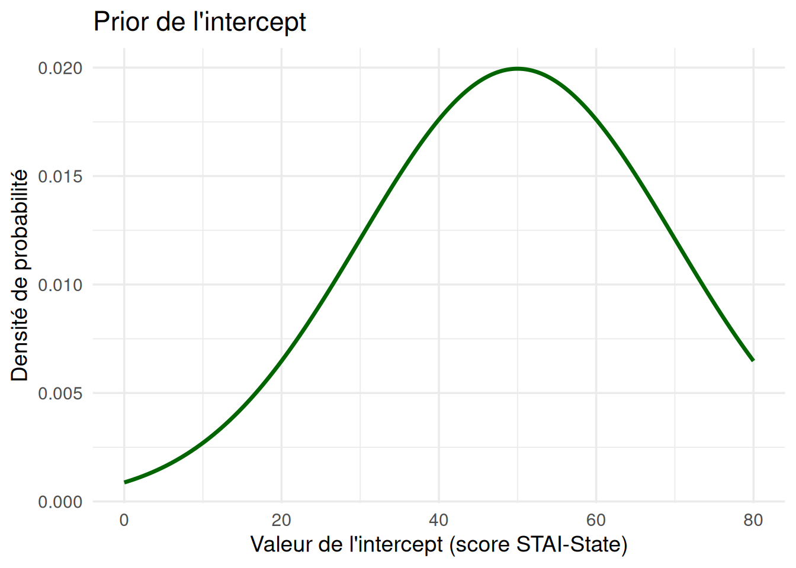
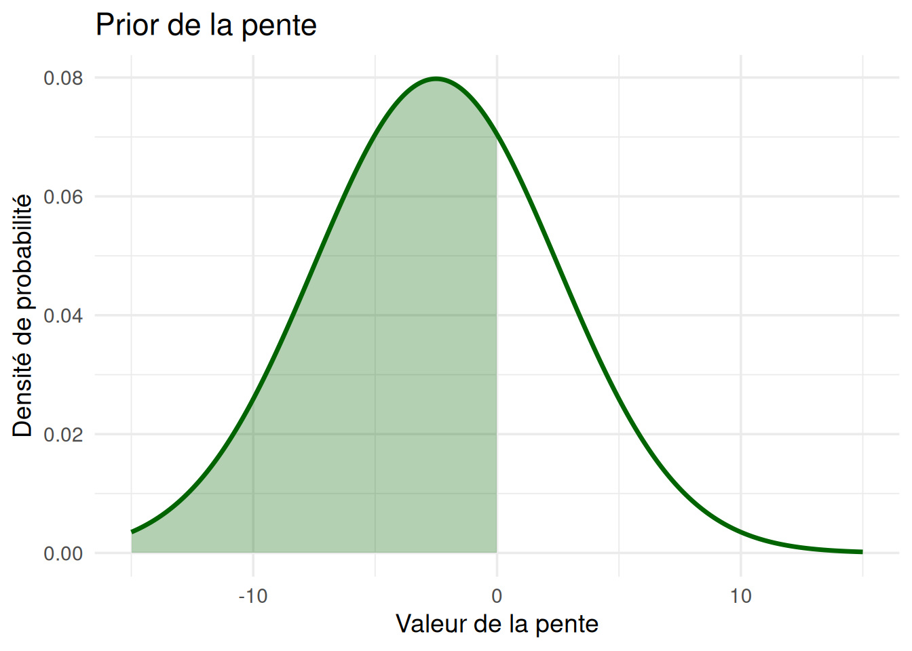
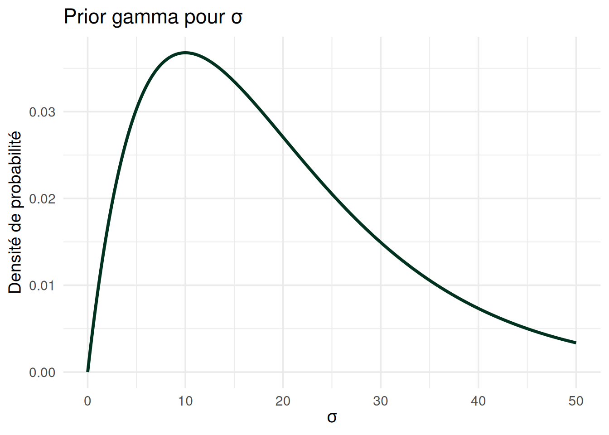
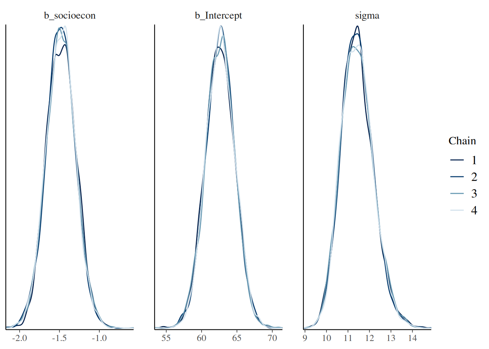
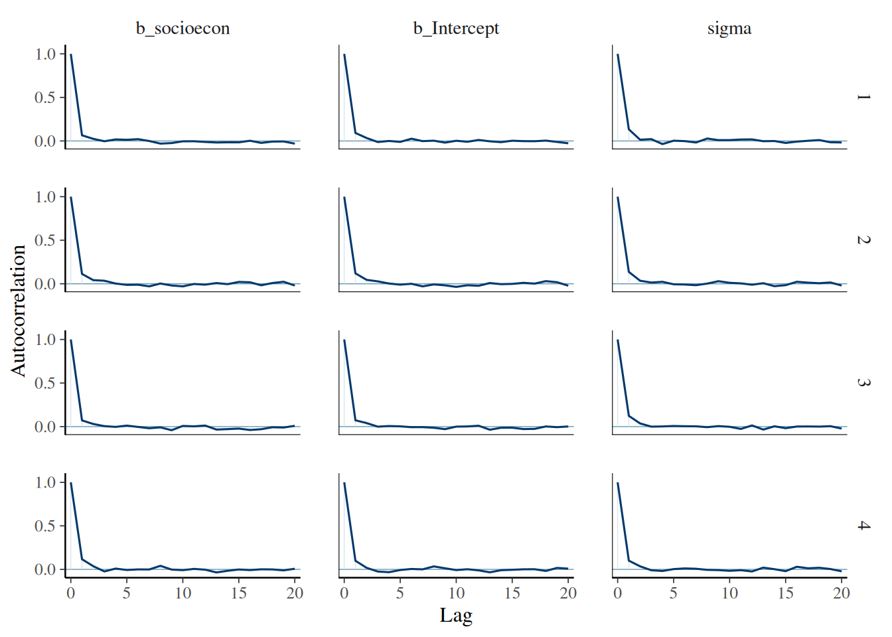
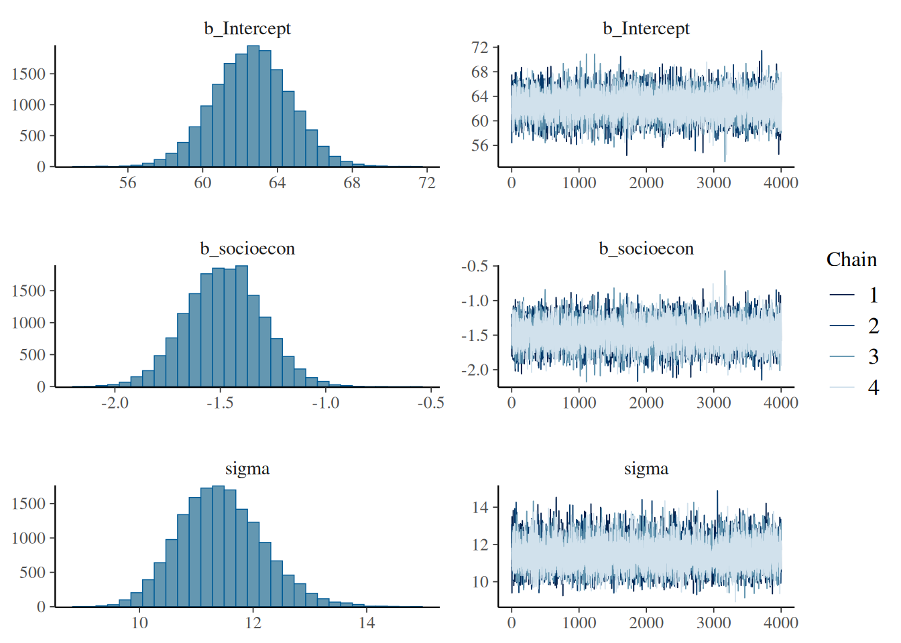
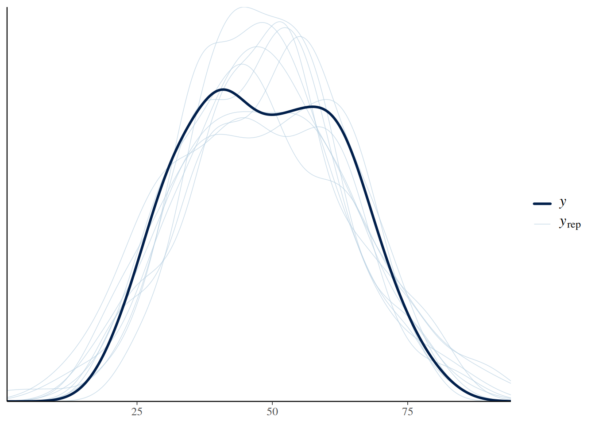
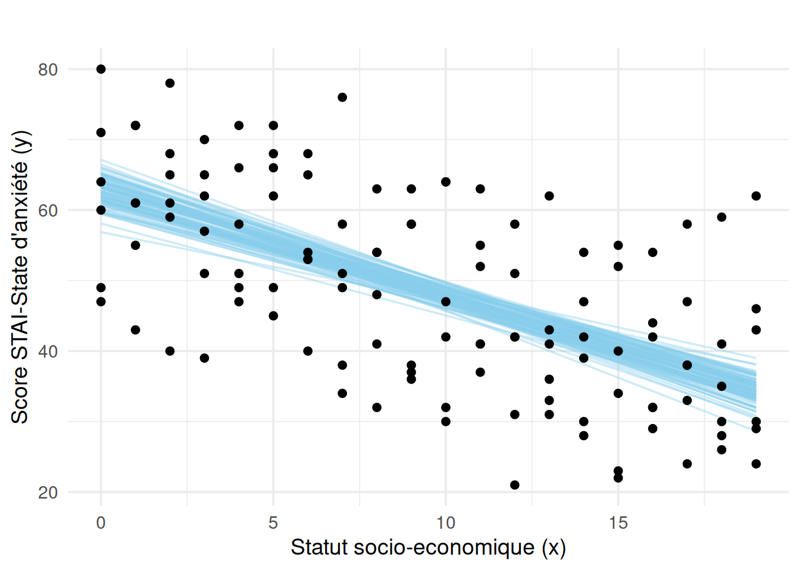

# Installation des packages
# install.packages("cmdstanr", repos = c("https://mc-stan.org/r-packages/", getOption("repos")))
# install.packages("brms")
# install.packages("tidybayes")Régression bayésienne
Dans ce notebook, nous allons voir l’application de l’approche bayésienne dans le cas d’une régression linéaire simple. Pour illustrer cette exemple, nous allons utiliser le package brms.
Ce package est particulièrememt utile pour deux raisons :
Il constitue une interface permettant d’écrire des modèles bayésiens dans le langage
Ren s’appuyant sur la puissance du moteur de calcul de Stan. Stan est un langage de programmation probabiliste permettant d’implémenter les MCMCs pour le calcul de la distribution a posteriori. Il est écrit enC++mais peut être utilisé via différentes interfaces, dontR,Python, etMatlab. D’autres outils tels que WinBUGS ou JAGS permettent d’implémenter des MCMCs avecR; Stan a l’avantage de reposer sur une méthode avancée appelée échantillonnage Hamiltonien dynamique qui lui permet de proposer une exploration plus efficace et plus rapide de l’espace des paramètres.Il permet de spécifier des modèles de régression bayésienne de façon intuitive, en utilisant une syntaxe similaire à celle des regressions fréquentistes dont nous avons l’habitude.
brmspermet donc d’utiliser non seulement des modèles linéaires généralisés classiques (par exemplelmoulme), mais aussi des modèles linéaires à effets mixtes (aussi appelés modèles hiérarchiques, par exemplelmer), tout en profitant de l’efficacité et de la robustesse des algorithmes deStanpour l’estimation.brmspermet donc de modéliser des stuctures de données plus complexes—par exemple, avec des effets aléatoires pour les individus ou les items—tout en adoptant une approche pleinement bayésienne.
Quelques aspects techniques avant de commencer
Bien que bmrs et rstan soient pratiques à utiliser, l’installation peut poser quelques soucis. Le code ci-dessous devrait marcher en principe, mais cela peut prendre un certain temps.
# Installer CmdStan en local (nécessite internet, peut durer jusqu'à 10 minutes)
cmdstanr::install_cmdstan(overwrite = TRUE)The C++ toolchain required for CmdStan is setup properly!* Latest CmdStan release is v2.38.0* Installing CmdStan v2.38.0 in /home/lavinia/.cmdstan/cmdstan-2.38.0* Downloading cmdstan-2.38.0.tar.gz from GitHub...* Removing the existing installation of CmdStan...* Download complete* Unpacking archive...* Building CmdStan binaries...g++ -Wno-deprecated-declarations -std=c++17 -pthread -D_REENTRANT -Wno-sign-compare -Wno-ignored-attributes -Wno-class-memaccess -I stan/lib/stan_math/lib/tbb_2020.3/include -O3 -I src -I stan/src -I stan/lib/rapidjson_1.1.0/ -I lib/CLI11-1.9.1/ -I stan/lib/stan_math/ -I stan/lib/stan_math/lib/eigen_3.4.0 -I stan/lib/stan_math/lib/boost_1.87.0 -I stan/lib/stan_math/lib/sundials_6.1.1/include -I stan/lib/stan_math/lib/sundials_6.1.1/src/sundials -DBOOST_DISABLE_ASSERTS -c -MT src/cmdstan/main.o -MM -E -MG -MP -MF src/cmdstan/main.d src/cmdstan/main.cpp
g++ -Wno-deprecated-declarations -std=c++17 -pthread -D_REENTRANT -Wno-sign-compare -Wno-ignored-attributes -Wno-class-memaccess -I stan/lib/stan_math/lib/tbb_2020.3/include -O3 -I src -I stan/src -I stan/lib/rapidjson_1.1.0/ -I lib/CLI11-1.9.1/ -I stan/lib/stan_math/ -I stan/lib/stan_math/lib/eigen_3.4.0 -I stan/lib/stan_math/lib/boost_1.87.0 -I stan/lib/stan_math/lib/sundials_6.1.1/include -I stan/lib/stan_math/lib/sundials_6.1.1/src/sundials -DBOOST_DISABLE_ASSERTS -c -MT bin/cmdstan/stansummary.o -MM -E -MG -MP -MF src/cmdstan/stansummary.d src/cmdstan/stansummary.cpp
cp bin/linux-stanc bin/stanc
g++ -pipe -pthread -D_REENTRANT -O3 -I stan/lib/stan_math/lib/sundials_6.1.1/include -I stan/lib/stan_math/lib/sundials_6.1.1/src/sundials -DNO_FPRINTF_OUTPUT -O3 -c -x c -include stan/lib/stan_math/lib/sundials_6.1.1/include/stan_sundials_printf_override.hpp stan/lib/stan_math/lib/sundials_6.1.1/src/nvector/serial/nvector_serial.c -o stan/lib/stan_math/lib/sundials_6.1.1/src/nvector/serial/nvector_serial.o
chmod +x bin/stanc
g++ -pipe -pthread -D_REENTRANT -O3 -I stan/lib/stan_math/lib/sundials_6.1.1/include -I stan/lib/stan_math/lib/sundials_6.1.1/src/sundials -DNO_FPRINTF_OUTPUT -O3 -c -x c -include stan/lib/stan_math/lib/sundials_6.1.1/include/stan_sundials_printf_override.hpp stan/lib/stan_math/lib/sundials_6.1.1/src/sundials/sundials_math.c -o stan/lib/stan_math/lib/sundials_6.1.1/src/sundials/sundials_math.o
g++ -pipe -pthread -D_REENTRANT -O3 -I stan/lib/stan_math/lib/sundials_6.1.1/include -I stan/lib/stan_math/lib/sundials_6.1.1/src/sundials -DNO_FPRINTF_OUTPUT -O3 -c -x c -include stan/lib/stan_math/lib/sundials_6.1.1/include/stan_sundials_printf_override.hpp stan/lib/stan_math/lib/sundials_6.1.1/src/cvodes/cvodea.c -o stan/lib/stan_math/lib/sundials_6.1.1/src/cvodes/cvodea.o
g++ -pipe -pthread -D_REENTRANT -O3 -I stan/lib/stan_math/lib/sundials_6.1.1/include -I stan/lib/stan_math/lib/sundials_6.1.1/src/sundials -DNO_FPRINTF_OUTPUT -O3 -c -x c -include stan/lib/stan_math/lib/sundials_6.1.1/include/stan_sundials_printf_override.hpp stan/lib/stan_math/lib/sundials_6.1.1/src/cvodes/cvodea_io.c -o stan/lib/stan_math/lib/sundials_6.1.1/src/cvodes/cvodea_io.o
g++ -pipe -pthread -D_REENTRANT -O3 -I stan/lib/stan_math/lib/sundials_6.1.1/include -I stan/lib/stan_math/lib/sundials_6.1.1/src/sundials -DNO_FPRINTF_OUTPUT -O3 -c -x c -include stan/lib/stan_math/lib/sundials_6.1.1/include/stan_sundials_printf_override.hpp stan/lib/stan_math/lib/sundials_6.1.1/src/cvodes/cvodes_bandpre.c -o stan/lib/stan_math/lib/sundials_6.1.1/src/cvodes/cvodes_bandpre.o
g++ -pipe -pthread -D_REENTRANT -O3 -I stan/lib/stan_math/lib/sundials_6.1.1/include -I stan/lib/stan_math/lib/sundials_6.1.1/src/sundials -DNO_FPRINTF_OUTPUT -O3 -c -x c -include stan/lib/stan_math/lib/sundials_6.1.1/include/stan_sundials_printf_override.hpp stan/lib/stan_math/lib/sundials_6.1.1/src/cvodes/cvodes_bbdpre.c -o stan/lib/stan_math/lib/sundials_6.1.1/src/cvodes/cvodes_bbdpre.o
g++ -pipe -pthread -D_REENTRANT -O3 -I stan/lib/stan_math/lib/sundials_6.1.1/include -I stan/lib/stan_math/lib/sundials_6.1.1/src/sundials -DNO_FPRINTF_OUTPUT -O3 -c -x c -include stan/lib/stan_math/lib/sundials_6.1.1/include/stan_sundials_printf_override.hpp stan/lib/stan_math/lib/sundials_6.1.1/src/cvodes/cvodes.c -o stan/lib/stan_math/lib/sundials_6.1.1/src/cvodes/cvodes.o
g++ -pipe -pthread -D_REENTRANT -O3 -I stan/lib/stan_math/lib/sundials_6.1.1/include -I stan/lib/stan_math/lib/sundials_6.1.1/src/sundials -DNO_FPRINTF_OUTPUT -O3 -c -x c -include stan/lib/stan_math/lib/sundials_6.1.1/include/stan_sundials_printf_override.hpp stan/lib/stan_math/lib/sundials_6.1.1/src/cvodes/cvodes_diag.c -o stan/lib/stan_math/lib/sundials_6.1.1/src/cvodes/cvodes_diag.o
g++ -pipe -pthread -D_REENTRANT -O3 -I stan/lib/stan_math/lib/sundials_6.1.1/include -I stan/lib/stan_math/lib/sundials_6.1.1/src/sundials -DNO_FPRINTF_OUTPUT -O3 -c -x c -include stan/lib/stan_math/lib/sundials_6.1.1/include/stan_sundials_printf_override.hpp stan/lib/stan_math/lib/sundials_6.1.1/src/cvodes/cvodes_direct.c -o stan/lib/stan_math/lib/sundials_6.1.1/src/cvodes/cvodes_direct.o
g++ -pipe -pthread -D_REENTRANT -O3 -I stan/lib/stan_math/lib/sundials_6.1.1/include -I stan/lib/stan_math/lib/sundials_6.1.1/src/sundials -DNO_FPRINTF_OUTPUT -O3 -c -x c -include stan/lib/stan_math/lib/sundials_6.1.1/include/stan_sundials_printf_override.hpp stan/lib/stan_math/lib/sundials_6.1.1/src/cvodes/cvodes_io.c -o stan/lib/stan_math/lib/sundials_6.1.1/src/cvodes/cvodes_io.o
g++ -pipe -pthread -D_REENTRANT -O3 -I stan/lib/stan_math/lib/sundials_6.1.1/include -I stan/lib/stan_math/lib/sundials_6.1.1/src/sundials -DNO_FPRINTF_OUTPUT -O3 -c -x c -include stan/lib/stan_math/lib/sundials_6.1.1/include/stan_sundials_printf_override.hpp stan/lib/stan_math/lib/sundials_6.1.1/src/cvodes/cvodes_ls.c -o stan/lib/stan_math/lib/sundials_6.1.1/src/cvodes/cvodes_ls.o
g++ -pipe -pthread -D_REENTRANT -O3 -I stan/lib/stan_math/lib/sundials_6.1.1/include -I stan/lib/stan_math/lib/sundials_6.1.1/src/sundials -DNO_FPRINTF_OUTPUT -O3 -c -x c -include stan/lib/stan_math/lib/sundials_6.1.1/include/stan_sundials_printf_override.hpp stan/lib/stan_math/lib/sundials_6.1.1/src/cvodes/cvodes_nls.c -o stan/lib/stan_math/lib/sundials_6.1.1/src/cvodes/cvodes_nls.o
g++ -pipe -pthread -D_REENTRANT -O3 -I stan/lib/stan_math/lib/sundials_6.1.1/include -I stan/lib/stan_math/lib/sundials_6.1.1/src/sundials -DNO_FPRINTF_OUTPUT -O3 -c -x c -include stan/lib/stan_math/lib/sundials_6.1.1/include/stan_sundials_printf_override.hpp stan/lib/stan_math/lib/sundials_6.1.1/src/cvodes/cvodes_nls_sim.c -o stan/lib/stan_math/lib/sundials_6.1.1/src/cvodes/cvodes_nls_sim.o
g++ -pipe -pthread -D_REENTRANT -O3 -I stan/lib/stan_math/lib/sundials_6.1.1/include -I stan/lib/stan_math/lib/sundials_6.1.1/src/sundials -DNO_FPRINTF_OUTPUT -O3 -c -x c -include stan/lib/stan_math/lib/sundials_6.1.1/include/stan_sundials_printf_override.hpp stan/lib/stan_math/lib/sundials_6.1.1/src/cvodes/cvodes_nls_stg1.c -o stan/lib/stan_math/lib/sundials_6.1.1/src/cvodes/cvodes_nls_stg1.o
g++ -pipe -pthread -D_REENTRANT -O3 -I stan/lib/stan_math/lib/sundials_6.1.1/include -I stan/lib/stan_math/lib/sundials_6.1.1/src/sundials -DNO_FPRINTF_OUTPUT -O3 -c -x c -include stan/lib/stan_math/lib/sundials_6.1.1/include/stan_sundials_printf_override.hpp stan/lib/stan_math/lib/sundials_6.1.1/src/cvodes/cvodes_nls_stg.c -o stan/lib/stan_math/lib/sundials_6.1.1/src/cvodes/cvodes_nls_stg.o
g++ -pipe -pthread -D_REENTRANT -O3 -I stan/lib/stan_math/lib/sundials_6.1.1/include -I stan/lib/stan_math/lib/sundials_6.1.1/src/sundials -DNO_FPRINTF_OUTPUT -O3 -c -x c -include stan/lib/stan_math/lib/sundials_6.1.1/include/stan_sundials_printf_override.hpp stan/lib/stan_math/lib/sundials_6.1.1/src/cvodes/cvodes_spils.c -o stan/lib/stan_math/lib/sundials_6.1.1/src/cvodes/cvodes_spils.o
g++ -pipe -pthread -D_REENTRANT -O3 -I stan/lib/stan_math/lib/sundials_6.1.1/include -I stan/lib/stan_math/lib/sundials_6.1.1/src/sundials -DNO_FPRINTF_OUTPUT -O3 -c -x c -include stan/lib/stan_math/lib/sundials_6.1.1/include/stan_sundials_printf_override.hpp stan/lib/stan_math/lib/sundials_6.1.1/src/sundials/sundials_band.c -o stan/lib/stan_math/lib/sundials_6.1.1/src/sundials/sundials_band.o
g++ -pipe -pthread -D_REENTRANT -O3 -I stan/lib/stan_math/lib/sundials_6.1.1/include -I stan/lib/stan_math/lib/sundials_6.1.1/src/sundials -DNO_FPRINTF_OUTPUT -O3 -c -x c -include stan/lib/stan_math/lib/sundials_6.1.1/include/stan_sundials_printf_override.hpp stan/lib/stan_math/lib/sundials_6.1.1/src/sundials/sundials_context.c -o stan/lib/stan_math/lib/sundials_6.1.1/src/sundials/sundials_context.o
g++ -pipe -pthread -D_REENTRANT -O3 -I stan/lib/stan_math/lib/sundials_6.1.1/include -I stan/lib/stan_math/lib/sundials_6.1.1/src/sundials -DNO_FPRINTF_OUTPUT -O3 -c -x c -include stan/lib/stan_math/lib/sundials_6.1.1/include/stan_sundials_printf_override.hpp stan/lib/stan_math/lib/sundials_6.1.1/src/sundials/sundials_dense.c -o stan/lib/stan_math/lib/sundials_6.1.1/src/sundials/sundials_dense.o
g++ -pipe -pthread -D_REENTRANT -O3 -I stan/lib/stan_math/lib/sundials_6.1.1/include -I stan/lib/stan_math/lib/sundials_6.1.1/src/sundials -DNO_FPRINTF_OUTPUT -O3 -c -x c -include stan/lib/stan_math/lib/sundials_6.1.1/include/stan_sundials_printf_override.hpp stan/lib/stan_math/lib/sundials_6.1.1/src/sundials/sundials_direct.c -o stan/lib/stan_math/lib/sundials_6.1.1/src/sundials/sundials_direct.o
g++ -pipe -pthread -D_REENTRANT -O3 -I stan/lib/stan_math/lib/sundials_6.1.1/include -I stan/lib/stan_math/lib/sundials_6.1.1/src/sundials -DNO_FPRINTF_OUTPUT -O3 -c -x c -include stan/lib/stan_math/lib/sundials_6.1.1/include/stan_sundials_printf_override.hpp stan/lib/stan_math/lib/sundials_6.1.1/src/sundials/sundials_futils.c -o stan/lib/stan_math/lib/sundials_6.1.1/src/sundials/sundials_futils.o
g++ -pipe -pthread -D_REENTRANT -O3 -I stan/lib/stan_math/lib/sundials_6.1.1/include -I stan/lib/stan_math/lib/sundials_6.1.1/src/sundials -DNO_FPRINTF_OUTPUT -O3 -c -x c -include stan/lib/stan_math/lib/sundials_6.1.1/include/stan_sundials_printf_override.hpp stan/lib/stan_math/lib/sundials_6.1.1/src/sundials/sundials_iterative.c -o stan/lib/stan_math/lib/sundials_6.1.1/src/sundials/sundials_iterative.o
g++ -pipe -pthread -D_REENTRANT -O3 -I stan/lib/stan_math/lib/sundials_6.1.1/include -I stan/lib/stan_math/lib/sundials_6.1.1/src/sundials -DNO_FPRINTF_OUTPUT -O3 -c -x c -include stan/lib/stan_math/lib/sundials_6.1.1/include/stan_sundials_printf_override.hpp stan/lib/stan_math/lib/sundials_6.1.1/src/sundials/sundials_linearsolver.c -o stan/lib/stan_math/lib/sundials_6.1.1/src/sundials/sundials_linearsolver.o
g++ -pipe -pthread -D_REENTRANT -O3 -I stan/lib/stan_math/lib/sundials_6.1.1/include -I stan/lib/stan_math/lib/sundials_6.1.1/src/sundials -DNO_FPRINTF_OUTPUT -O3 -c -x c -include stan/lib/stan_math/lib/sundials_6.1.1/include/stan_sundials_printf_override.hpp stan/lib/stan_math/lib/sundials_6.1.1/src/sundials/sundials_matrix.c -o stan/lib/stan_math/lib/sundials_6.1.1/src/sundials/sundials_matrix.o
g++ -pipe -pthread -D_REENTRANT -O3 -I stan/lib/stan_math/lib/sundials_6.1.1/include -I stan/lib/stan_math/lib/sundials_6.1.1/src/sundials -DNO_FPRINTF_OUTPUT -O3 -c -x c -include stan/lib/stan_math/lib/sundials_6.1.1/include/stan_sundials_printf_override.hpp stan/lib/stan_math/lib/sundials_6.1.1/src/sundials/sundials_memory.c -o stan/lib/stan_math/lib/sundials_6.1.1/src/sundials/sundials_memory.o
g++ -pipe -pthread -D_REENTRANT -O3 -I stan/lib/stan_math/lib/sundials_6.1.1/include -I stan/lib/stan_math/lib/sundials_6.1.1/src/sundials -DNO_FPRINTF_OUTPUT -O3 -c -x c -include stan/lib/stan_math/lib/sundials_6.1.1/include/stan_sundials_printf_override.hpp stan/lib/stan_math/lib/sundials_6.1.1/src/sundials/sundials_nonlinearsolver.c -o stan/lib/stan_math/lib/sundials_6.1.1/src/sundials/sundials_nonlinearsolver.o
g++ -pipe -pthread -D_REENTRANT -O3 -I stan/lib/stan_math/lib/sundials_6.1.1/include -I stan/lib/stan_math/lib/sundials_6.1.1/src/sundials -DNO_FPRINTF_OUTPUT -O3 -c -x c -include stan/lib/stan_math/lib/sundials_6.1.1/include/stan_sundials_printf_override.hpp stan/lib/stan_math/lib/sundials_6.1.1/src/sundials/sundials_nvector.c -o stan/lib/stan_math/lib/sundials_6.1.1/src/sundials/sundials_nvector.o
g++ -pipe -pthread -D_REENTRANT -O3 -I stan/lib/stan_math/lib/sundials_6.1.1/include -I stan/lib/stan_math/lib/sundials_6.1.1/src/sundials -DNO_FPRINTF_OUTPUT -O3 -c -x c -include stan/lib/stan_math/lib/sundials_6.1.1/include/stan_sundials_printf_override.hpp stan/lib/stan_math/lib/sundials_6.1.1/src/sundials/sundials_nvector_senswrapper.c -o stan/lib/stan_math/lib/sundials_6.1.1/src/sundials/sundials_nvector_senswrapper.o
g++ -pipe -pthread -D_REENTRANT -O3 -I stan/lib/stan_math/lib/sundials_6.1.1/include -I stan/lib/stan_math/lib/sundials_6.1.1/src/sundials -DNO_FPRINTF_OUTPUT -O3 -c -x c -include stan/lib/stan_math/lib/sundials_6.1.1/include/stan_sundials_printf_override.hpp stan/lib/stan_math/lib/sundials_6.1.1/src/sundials/sundials_version.c -o stan/lib/stan_math/lib/sundials_6.1.1/src/sundials/sundials_version.o
g++ -pipe -pthread -D_REENTRANT -O3 -I stan/lib/stan_math/lib/sundials_6.1.1/include -I stan/lib/stan_math/lib/sundials_6.1.1/src/sundials -DNO_FPRINTF_OUTPUT -O3 -c -x c -include stan/lib/stan_math/lib/sundials_6.1.1/include/stan_sundials_printf_override.hpp stan/lib/stan_math/lib/sundials_6.1.1/src/sunmatrix/band/sunmatrix_band.c -o stan/lib/stan_math/lib/sundials_6.1.1/src/sunmatrix/band/sunmatrix_band.o
g++ -pipe -pthread -D_REENTRANT -O3 -I stan/lib/stan_math/lib/sundials_6.1.1/include -I stan/lib/stan_math/lib/sundials_6.1.1/src/sundials -DNO_FPRINTF_OUTPUT -O3 -c -x c -include stan/lib/stan_math/lib/sundials_6.1.1/include/stan_sundials_printf_override.hpp stan/lib/stan_math/lib/sundials_6.1.1/src/sunmatrix/dense/sunmatrix_dense.c -o stan/lib/stan_math/lib/sundials_6.1.1/src/sunmatrix/dense/sunmatrix_dense.o
g++ -pipe -pthread -D_REENTRANT -O3 -I stan/lib/stan_math/lib/sundials_6.1.1/include -I stan/lib/stan_math/lib/sundials_6.1.1/src/sundials -DNO_FPRINTF_OUTPUT -O3 -c -x c -include stan/lib/stan_math/lib/sundials_6.1.1/include/stan_sundials_printf_override.hpp stan/lib/stan_math/lib/sundials_6.1.1/src/sunlinsol/band/sunlinsol_band.c -o stan/lib/stan_math/lib/sundials_6.1.1/src/sunlinsol/band/sunlinsol_band.o
g++ -pipe -pthread -D_REENTRANT -O3 -I stan/lib/stan_math/lib/sundials_6.1.1/include -I stan/lib/stan_math/lib/sundials_6.1.1/src/sundials -DNO_FPRINTF_OUTPUT -O3 -c -x c -include stan/lib/stan_math/lib/sundials_6.1.1/include/stan_sundials_printf_override.hpp stan/lib/stan_math/lib/sundials_6.1.1/src/sunlinsol/dense/sunlinsol_dense.c -o stan/lib/stan_math/lib/sundials_6.1.1/src/sunlinsol/dense/sunlinsol_dense.o
g++ -pipe -pthread -D_REENTRANT -O3 -I stan/lib/stan_math/lib/sundials_6.1.1/include -I stan/lib/stan_math/lib/sundials_6.1.1/src/sundials -DNO_FPRINTF_OUTPUT -O3 -c -x c -include stan/lib/stan_math/lib/sundials_6.1.1/include/stan_sundials_printf_override.hpp stan/lib/stan_math/lib/sundials_6.1.1/src/sunnonlinsol/newton/sunnonlinsol_newton.c -o stan/lib/stan_math/lib/sundials_6.1.1/src/sunnonlinsol/newton/sunnonlinsol_newton.o
g++ -pipe -pthread -D_REENTRANT -O3 -I stan/lib/stan_math/lib/sundials_6.1.1/include -I stan/lib/stan_math/lib/sundials_6.1.1/src/sundials -DNO_FPRINTF_OUTPUT -O3 -c -x c -include stan/lib/stan_math/lib/sundials_6.1.1/include/stan_sundials_printf_override.hpp stan/lib/stan_math/lib/sundials_6.1.1/src/sunnonlinsol/fixedpoint/sunnonlinsol_fixedpoint.c -o stan/lib/stan_math/lib/sundials_6.1.1/src/sunnonlinsol/fixedpoint/sunnonlinsol_fixedpoint.o
g++ -pipe -pthread -D_REENTRANT -O3 -I stan/lib/stan_math/lib/sundials_6.1.1/include -I stan/lib/stan_math/lib/sundials_6.1.1/src/sundials -DNO_FPRINTF_OUTPUT -O3 -c -x c -include stan/lib/stan_math/lib/sundials_6.1.1/include/stan_sundials_printf_override.hpp stan/lib/stan_math/lib/sundials_6.1.1/src/idas/idaa.c -o stan/lib/stan_math/lib/sundials_6.1.1/src/idas/idaa.o
g++ -pipe -pthread -D_REENTRANT -O3 -I stan/lib/stan_math/lib/sundials_6.1.1/include -I stan/lib/stan_math/lib/sundials_6.1.1/src/sundials -DNO_FPRINTF_OUTPUT -O3 -c -x c -include stan/lib/stan_math/lib/sundials_6.1.1/include/stan_sundials_printf_override.hpp stan/lib/stan_math/lib/sundials_6.1.1/src/idas/idaa_io.c -o stan/lib/stan_math/lib/sundials_6.1.1/src/idas/idaa_io.o
g++ -pipe -pthread -D_REENTRANT -O3 -I stan/lib/stan_math/lib/sundials_6.1.1/include -I stan/lib/stan_math/lib/sundials_6.1.1/src/sundials -DNO_FPRINTF_OUTPUT -O3 -c -x c -include stan/lib/stan_math/lib/sundials_6.1.1/include/stan_sundials_printf_override.hpp stan/lib/stan_math/lib/sundials_6.1.1/src/idas/idas_bbdpre.c -o stan/lib/stan_math/lib/sundials_6.1.1/src/idas/idas_bbdpre.o
g++ -pipe -pthread -D_REENTRANT -O3 -I stan/lib/stan_math/lib/sundials_6.1.1/include -I stan/lib/stan_math/lib/sundials_6.1.1/src/sundials -DNO_FPRINTF_OUTPUT -O3 -c -x c -include stan/lib/stan_math/lib/sundials_6.1.1/include/stan_sundials_printf_override.hpp stan/lib/stan_math/lib/sundials_6.1.1/src/idas/idas.c -o stan/lib/stan_math/lib/sundials_6.1.1/src/idas/idas.o
g++ -pipe -pthread -D_REENTRANT -O3 -I stan/lib/stan_math/lib/sundials_6.1.1/include -I stan/lib/stan_math/lib/sundials_6.1.1/src/sundials -DNO_FPRINTF_OUTPUT -O3 -c -x c -include stan/lib/stan_math/lib/sundials_6.1.1/include/stan_sundials_printf_override.hpp stan/lib/stan_math/lib/sundials_6.1.1/src/idas/idas_direct.c -o stan/lib/stan_math/lib/sundials_6.1.1/src/idas/idas_direct.o
g++ -pipe -pthread -D_REENTRANT -O3 -I stan/lib/stan_math/lib/sundials_6.1.1/include -I stan/lib/stan_math/lib/sundials_6.1.1/src/sundials -DNO_FPRINTF_OUTPUT -O3 -c -x c -include stan/lib/stan_math/lib/sundials_6.1.1/include/stan_sundials_printf_override.hpp stan/lib/stan_math/lib/sundials_6.1.1/src/idas/idas_ic.c -o stan/lib/stan_math/lib/sundials_6.1.1/src/idas/idas_ic.o
g++ -pipe -pthread -D_REENTRANT -O3 -I stan/lib/stan_math/lib/sundials_6.1.1/include -I stan/lib/stan_math/lib/sundials_6.1.1/src/sundials -DNO_FPRINTF_OUTPUT -O3 -c -x c -include stan/lib/stan_math/lib/sundials_6.1.1/include/stan_sundials_printf_override.hpp stan/lib/stan_math/lib/sundials_6.1.1/src/idas/idas_io.c -o stan/lib/stan_math/lib/sundials_6.1.1/src/idas/idas_io.o
g++ -pipe -pthread -D_REENTRANT -O3 -I stan/lib/stan_math/lib/sundials_6.1.1/include -I stan/lib/stan_math/lib/sundials_6.1.1/src/sundials -DNO_FPRINTF_OUTPUT -O3 -c -x c -include stan/lib/stan_math/lib/sundials_6.1.1/include/stan_sundials_printf_override.hpp stan/lib/stan_math/lib/sundials_6.1.1/src/idas/idas_ls.c -o stan/lib/stan_math/lib/sundials_6.1.1/src/idas/idas_ls.o
g++ -pipe -pthread -D_REENTRANT -O3 -I stan/lib/stan_math/lib/sundials_6.1.1/include -I stan/lib/stan_math/lib/sundials_6.1.1/src/sundials -DNO_FPRINTF_OUTPUT -O3 -c -x c -include stan/lib/stan_math/lib/sundials_6.1.1/include/stan_sundials_printf_override.hpp stan/lib/stan_math/lib/sundials_6.1.1/src/idas/idas_nls.c -o stan/lib/stan_math/lib/sundials_6.1.1/src/idas/idas_nls.o
g++ -pipe -pthread -D_REENTRANT -O3 -I stan/lib/stan_math/lib/sundials_6.1.1/include -I stan/lib/stan_math/lib/sundials_6.1.1/src/sundials -DNO_FPRINTF_OUTPUT -O3 -c -x c -include stan/lib/stan_math/lib/sundials_6.1.1/include/stan_sundials_printf_override.hpp stan/lib/stan_math/lib/sundials_6.1.1/src/idas/idas_nls_sim.c -o stan/lib/stan_math/lib/sundials_6.1.1/src/idas/idas_nls_sim.o
g++ -pipe -pthread -D_REENTRANT -O3 -I stan/lib/stan_math/lib/sundials_6.1.1/include -I stan/lib/stan_math/lib/sundials_6.1.1/src/sundials -DNO_FPRINTF_OUTPUT -O3 -c -x c -include stan/lib/stan_math/lib/sundials_6.1.1/include/stan_sundials_printf_override.hpp stan/lib/stan_math/lib/sundials_6.1.1/src/idas/idas_nls_stg.c -o stan/lib/stan_math/lib/sundials_6.1.1/src/idas/idas_nls_stg.o
g++ -pipe -pthread -D_REENTRANT -O3 -I stan/lib/stan_math/lib/sundials_6.1.1/include -I stan/lib/stan_math/lib/sundials_6.1.1/src/sundials -DNO_FPRINTF_OUTPUT -O3 -c -x c -include stan/lib/stan_math/lib/sundials_6.1.1/include/stan_sundials_printf_override.hpp stan/lib/stan_math/lib/sundials_6.1.1/src/idas/idas_spils.c -o stan/lib/stan_math/lib/sundials_6.1.1/src/idas/idas_spils.o
g++ -pipe -pthread -D_REENTRANT -O3 -I stan/lib/stan_math/lib/sundials_6.1.1/include -I stan/lib/stan_math/lib/sundials_6.1.1/src/sundials -DNO_FPRINTF_OUTPUT -O3 -c -x c -include stan/lib/stan_math/lib/sundials_6.1.1/include/stan_sundials_printf_override.hpp stan/lib/stan_math/lib/sundials_6.1.1/src/kinsol/kinsol_bbdpre.c -o stan/lib/stan_math/lib/sundials_6.1.1/src/kinsol/kinsol_bbdpre.o
g++ -pipe -pthread -D_REENTRANT -O3 -I stan/lib/stan_math/lib/sundials_6.1.1/include -I stan/lib/stan_math/lib/sundials_6.1.1/src/sundials -DNO_FPRINTF_OUTPUT -O3 -c -x c -include stan/lib/stan_math/lib/sundials_6.1.1/include/stan_sundials_printf_override.hpp stan/lib/stan_math/lib/sundials_6.1.1/src/kinsol/kinsol.c -o stan/lib/stan_math/lib/sundials_6.1.1/src/kinsol/kinsol.o
g++ -pipe -pthread -D_REENTRANT -O3 -I stan/lib/stan_math/lib/sundials_6.1.1/include -I stan/lib/stan_math/lib/sundials_6.1.1/src/sundials -DNO_FPRINTF_OUTPUT -O3 -c -x c -include stan/lib/stan_math/lib/sundials_6.1.1/include/stan_sundials_printf_override.hpp stan/lib/stan_math/lib/sundials_6.1.1/src/kinsol/kinsol_direct.c -o stan/lib/stan_math/lib/sundials_6.1.1/src/kinsol/kinsol_direct.o
g++ -pipe -pthread -D_REENTRANT -O3 -I stan/lib/stan_math/lib/sundials_6.1.1/include -I stan/lib/stan_math/lib/sundials_6.1.1/src/sundials -DNO_FPRINTF_OUTPUT -O3 -c -x c -include stan/lib/stan_math/lib/sundials_6.1.1/include/stan_sundials_printf_override.hpp stan/lib/stan_math/lib/sundials_6.1.1/src/kinsol/kinsol_io.c -o stan/lib/stan_math/lib/sundials_6.1.1/src/kinsol/kinsol_io.o
g++ -pipe -pthread -D_REENTRANT -O3 -I stan/lib/stan_math/lib/sundials_6.1.1/include -I stan/lib/stan_math/lib/sundials_6.1.1/src/sundials -DNO_FPRINTF_OUTPUT -O3 -c -x c -include stan/lib/stan_math/lib/sundials_6.1.1/include/stan_sundials_printf_override.hpp stan/lib/stan_math/lib/sundials_6.1.1/src/kinsol/kinsol_ls.c -o stan/lib/stan_math/lib/sundials_6.1.1/src/kinsol/kinsol_ls.o
g++ -pipe -pthread -D_REENTRANT -O3 -I stan/lib/stan_math/lib/sundials_6.1.1/include -I stan/lib/stan_math/lib/sundials_6.1.1/src/sundials -DNO_FPRINTF_OUTPUT -O3 -c -x c -include stan/lib/stan_math/lib/sundials_6.1.1/include/stan_sundials_printf_override.hpp stan/lib/stan_math/lib/sundials_6.1.1/src/kinsol/kinsol_spils.c -o stan/lib/stan_math/lib/sundials_6.1.1/src/kinsol/kinsol_spils.o
touch stan/lib/stan_math/lib/tbb/tbb-make-check
--- Compiling pre-compiled header. This might take a few seconds. ---
g++ -Wno-deprecated-declarations -std=c++17 -pthread -D_REENTRANT -Wno-sign-compare -Wno-ignored-attributes -Wno-class-memaccess -I stan/lib/stan_math/lib/tbb_2020.3/include -O3 -I src -I stan/src -I stan/lib/rapidjson_1.1.0/ -I lib/CLI11-1.9.1/ -I stan/lib/stan_math/ -I stan/lib/stan_math/lib/eigen_3.4.0 -I stan/lib/stan_math/lib/boost_1.87.0 -I stan/lib/stan_math/lib/sundials_6.1.1/include -I stan/lib/stan_math/lib/sundials_6.1.1/src/sundials -DBOOST_DISABLE_ASSERTS -c -fvisibility=hidden src/cmdstan/stansummary.cpp -o bin/cmdstan/stansummary.o
g++ -Wno-deprecated-declarations -std=c++17 -pthread -D_REENTRANT -Wno-sign-compare -Wno-ignored-attributes -Wno-class-memaccess -I stan/lib/stan_math/lib/tbb_2020.3/include -O3 -I src -I stan/src -I stan/lib/rapidjson_1.1.0/ -I lib/CLI11-1.9.1/ -I stan/lib/stan_math/ -I stan/lib/stan_math/lib/eigen_3.4.0 -I stan/lib/stan_math/lib/boost_1.87.0 -I stan/lib/stan_math/lib/sundials_6.1.1/include -I stan/lib/stan_math/lib/sundials_6.1.1/src/sundials -DBOOST_DISABLE_ASSERTS -c stan/src/stan/model/model_header.hpp -o stan/src/stan/model/model_header.hpp.gch/model_header_13_3.hpp.gch
g++ -Wno-deprecated-declarations -std=c++17 -pthread -D_REENTRANT -Wno-sign-compare -Wno-ignored-attributes -Wno-class-memaccess -I stan/lib/stan_math/lib/tbb_2020.3/include -O3 -I src -I stan/src -I stan/lib/rapidjson_1.1.0/ -I lib/CLI11-1.9.1/ -I stan/lib/stan_math/ -I stan/lib/stan_math/lib/eigen_3.4.0 -I stan/lib/stan_math/lib/boost_1.87.0 -I stan/lib/stan_math/lib/sundials_6.1.1/include -I stan/lib/stan_math/lib/sundials_6.1.1/src/sundials -DBOOST_DISABLE_ASSERTS -c -fvisibility=hidden src/cmdstan/print.cpp -o bin/cmdstan/print.o
g++ -Wno-deprecated-declarations -std=c++17 -pthread -D_REENTRANT -Wno-sign-compare -Wno-ignored-attributes -Wno-class-memaccess -I stan/lib/stan_math/lib/tbb_2020.3/include -O3 -I src -I stan/src -I stan/lib/rapidjson_1.1.0/ -I lib/CLI11-1.9.1/ -I stan/lib/stan_math/ -I stan/lib/stan_math/lib/eigen_3.4.0 -I stan/lib/stan_math/lib/boost_1.87.0 -I stan/lib/stan_math/lib/sundials_6.1.1/include -I stan/lib/stan_math/lib/sundials_6.1.1/src/sundials -DBOOST_DISABLE_ASSERTS -c -fvisibility=hidden src/cmdstan/diagnose.cpp -o bin/cmdstan/diagnose.o
ar -rs stan/lib/stan_math/lib/sundials_6.1.1/lib/libsundials_nvecserial.a stan/lib/stan_math/lib/sundials_6.1.1/src/nvector/serial/nvector_serial.o stan/lib/stan_math/lib/sundials_6.1.1/src/sundials/sundials_math.o
ar: creating stan/lib/stan_math/lib/sundials_6.1.1/lib/libsundials_nvecserial.a
ar -rs stan/lib/stan_math/lib/sundials_6.1.1/lib/libsundials_cvodes.a stan/lib/stan_math/lib/sundials_6.1.1/src/cvodes/cvodea.o stan/lib/stan_math/lib/sundials_6.1.1/src/cvodes/cvodea_io.o stan/lib/stan_math/lib/sundials_6.1.1/src/cvodes/cvodes_bandpre.o stan/lib/stan_math/lib/sundials_6.1.1/src/cvodes/cvodes_bbdpre.o stan/lib/stan_math/lib/sundials_6.1.1/src/cvodes/cvodes.o stan/lib/stan_math/lib/sundials_6.1.1/src/cvodes/cvodes_diag.o stan/lib/stan_math/lib/sundials_6.1.1/src/cvodes/cvodes_direct.o stan/lib/stan_math/lib/sundials_6.1.1/src/cvodes/cvodes_io.o stan/lib/stan_math/lib/sundials_6.1.1/src/cvodes/cvodes_ls.o stan/lib/stan_math/lib/sundials_6.1.1/src/cvodes/cvodes_nls.o stan/lib/stan_math/lib/sundials_6.1.1/src/cvodes/cvodes_nls_sim.o stan/lib/stan_math/lib/sundials_6.1.1/src/cvodes/cvodes_nls_stg1.o stan/lib/stan_math/lib/sundials_6.1.1/src/cvodes/cvodes_nls_stg.o stan/lib/stan_math/lib/sundials_6.1.1/src/cvodes/cvodes_spils.o stan/lib/stan_math/lib/sundials_6.1.1/src/sundials/sundials_band.o stan/lib/stan_math/lib/sundials_6.1.1/src/sundials/sundials_context.o stan/lib/stan_math/lib/sundials_6.1.1/src/sundials/sundials_dense.o stan/lib/stan_math/lib/sundials_6.1.1/src/sundials/sundials_direct.o stan/lib/stan_math/lib/sundials_6.1.1/src/sundials/sundials_futils.o stan/lib/stan_math/lib/sundials_6.1.1/src/sundials/sundials_iterative.o stan/lib/stan_math/lib/sundials_6.1.1/src/sundials/sundials_linearsolver.o stan/lib/stan_math/lib/sundials_6.1.1/src/sundials/sundials_math.o stan/lib/stan_math/lib/sundials_6.1.1/src/sundials/sundials_matrix.o stan/lib/stan_math/lib/sundials_6.1.1/src/sundials/sundials_memory.o stan/lib/stan_math/lib/sundials_6.1.1/src/sundials/sundials_nonlinearsolver.o stan/lib/stan_math/lib/sundials_6.1.1/src/sundials/sundials_nvector.o stan/lib/stan_math/lib/sundials_6.1.1/src/sundials/sundials_nvector_senswrapper.o stan/lib/stan_math/lib/sundials_6.1.1/src/sundials/sundials_version.o stan/lib/stan_math/lib/sundials_6.1.1/src/sunmatrix/band/sunmatrix_band.o stan/lib/stan_math/lib/sundials_6.1.1/src/sunmatrix/dense/sunmatrix_dense.o stan/lib/stan_math/lib/sundials_6.1.1/src/sunlinsol/band/sunlinsol_band.o stan/lib/stan_math/lib/sundials_6.1.1/src/sunlinsol/dense/sunlinsol_dense.o stan/lib/stan_math/lib/sundials_6.1.1/src/sunnonlinsol/newton/sunnonlinsol_newton.o stan/lib/stan_math/lib/sundials_6.1.1/src/sunnonlinsol/fixedpoint/sunnonlinsol_fixedpoint.o
ar: creating stan/lib/stan_math/lib/sundials_6.1.1/lib/libsundials_cvodes.a
ar -rs stan/lib/stan_math/lib/sundials_6.1.1/lib/libsundials_idas.a stan/lib/stan_math/lib/sundials_6.1.1/src/idas/idaa.o stan/lib/stan_math/lib/sundials_6.1.1/src/idas/idaa_io.o stan/lib/stan_math/lib/sundials_6.1.1/src/idas/idas_bbdpre.o stan/lib/stan_math/lib/sundials_6.1.1/src/idas/idas.o stan/lib/stan_math/lib/sundials_6.1.1/src/idas/idas_direct.o stan/lib/stan_math/lib/sundials_6.1.1/src/idas/idas_ic.o stan/lib/stan_math/lib/sundials_6.1.1/src/idas/idas_io.o stan/lib/stan_math/lib/sundials_6.1.1/src/idas/idas_ls.o stan/lib/stan_math/lib/sundials_6.1.1/src/idas/idas_nls.o stan/lib/stan_math/lib/sundials_6.1.1/src/idas/idas_nls_sim.o stan/lib/stan_math/lib/sundials_6.1.1/src/idas/idas_nls_stg.o stan/lib/stan_math/lib/sundials_6.1.1/src/idas/idas_spils.o stan/lib/stan_math/lib/sundials_6.1.1/src/sundials/sundials_band.o stan/lib/stan_math/lib/sundials_6.1.1/src/sundials/sundials_context.o stan/lib/stan_math/lib/sundials_6.1.1/src/sundials/sundials_dense.o stan/lib/stan_math/lib/sundials_6.1.1/src/sundials/sundials_direct.o stan/lib/stan_math/lib/sundials_6.1.1/src/sundials/sundials_futils.o stan/lib/stan_math/lib/sundials_6.1.1/src/sundials/sundials_iterative.o stan/lib/stan_math/lib/sundials_6.1.1/src/sundials/sundials_linearsolver.o stan/lib/stan_math/lib/sundials_6.1.1/src/sundials/sundials_math.o stan/lib/stan_math/lib/sundials_6.1.1/src/sundials/sundials_matrix.o stan/lib/stan_math/lib/sundials_6.1.1/src/sundials/sundials_memory.o stan/lib/stan_math/lib/sundials_6.1.1/src/sundials/sundials_nonlinearsolver.o stan/lib/stan_math/lib/sundials_6.1.1/src/sundials/sundials_nvector.o stan/lib/stan_math/lib/sundials_6.1.1/src/sundials/sundials_nvector_senswrapper.o stan/lib/stan_math/lib/sundials_6.1.1/src/sundials/sundials_version.o stan/lib/stan_math/lib/sundials_6.1.1/src/sunmatrix/band/sunmatrix_band.o stan/lib/stan_math/lib/sundials_6.1.1/src/sunmatrix/dense/sunmatrix_dense.o stan/lib/stan_math/lib/sundials_6.1.1/src/sunlinsol/band/sunlinsol_band.o stan/lib/stan_math/lib/sundials_6.1.1/src/sunlinsol/dense/sunlinsol_dense.o stan/lib/stan_math/lib/sundials_6.1.1/src/sunnonlinsol/newton/sunnonlinsol_newton.o stan/lib/stan_math/lib/sundials_6.1.1/src/sunnonlinsol/fixedpoint/sunnonlinsol_fixedpoint.o
ar: creating stan/lib/stan_math/lib/sundials_6.1.1/lib/libsundials_idas.a
ar -rs stan/lib/stan_math/lib/sundials_6.1.1/lib/libsundials_kinsol.a stan/lib/stan_math/lib/sundials_6.1.1/src/kinsol/kinsol_bbdpre.o stan/lib/stan_math/lib/sundials_6.1.1/src/kinsol/kinsol.o stan/lib/stan_math/lib/sundials_6.1.1/src/kinsol/kinsol_direct.o stan/lib/stan_math/lib/sundials_6.1.1/src/kinsol/kinsol_io.o stan/lib/stan_math/lib/sundials_6.1.1/src/kinsol/kinsol_ls.o stan/lib/stan_math/lib/sundials_6.1.1/src/kinsol/kinsol_spils.o stan/lib/stan_math/lib/sundials_6.1.1/src/sundials/sundials_band.o stan/lib/stan_math/lib/sundials_6.1.1/src/sundials/sundials_context.o stan/lib/stan_math/lib/sundials_6.1.1/src/sundials/sundials_dense.o stan/lib/stan_math/lib/sundials_6.1.1/src/sundials/sundials_direct.o stan/lib/stan_math/lib/sundials_6.1.1/src/sundials/sundials_futils.o stan/lib/stan_math/lib/sundials_6.1.1/src/sundials/sundials_iterative.o stan/lib/stan_math/lib/sundials_6.1.1/src/sundials/sundials_linearsolver.o stan/lib/stan_math/lib/sundials_6.1.1/src/sundials/sundials_math.o stan/lib/stan_math/lib/sundials_6.1.1/src/sundials/sundials_matrix.o stan/lib/stan_math/lib/sundials_6.1.1/src/sundials/sundials_memory.o stan/lib/stan_math/lib/sundials_6.1.1/src/sundials/sundials_nonlinearsolver.o stan/lib/stan_math/lib/sundials_6.1.1/src/sundials/sundials_nvector.o stan/lib/stan_math/lib/sundials_6.1.1/src/sundials/sundials_nvector_senswrapper.o stan/lib/stan_math/lib/sundials_6.1.1/src/sundials/sundials_version.o stan/lib/stan_math/lib/sundials_6.1.1/src/sunmatrix/band/sunmatrix_band.o stan/lib/stan_math/lib/sundials_6.1.1/src/sunmatrix/dense/sunmatrix_dense.o stan/lib/stan_math/lib/sundials_6.1.1/src/sunlinsol/band/sunlinsol_band.o stan/lib/stan_math/lib/sundials_6.1.1/src/sunlinsol/dense/sunlinsol_dense.o stan/lib/stan_math/lib/sundials_6.1.1/src/sunnonlinsol/newton/sunnonlinsol_newton.o stan/lib/stan_math/lib/sundials_6.1.1/src/sunnonlinsol/fixedpoint/sunnonlinsol_fixedpoint.o
ar: creating stan/lib/stan_math/lib/sundials_6.1.1/lib/libsundials_kinsol.a
touch stan/lib/stan_math/lib/tbb/version_tbb_2020.3
tbb_root="../tbb_2020.3" WINARM64="" CXX="g++" CC="gcc" LDFLAGS='-Wl,-L,"/home/lavinia/.cmdstan/cmdstan-2.38.0/stan/lib/stan_math/lib/tbb" -Wl,-rpath,"/home/lavinia/.cmdstan/cmdstan-2.38.0/stan/lib/stan_math/lib/tbb"' 'make' -C "stan/lib/stan_math/lib/tbb" -r -f "/home/lavinia/.cmdstan/cmdstan-2.38.0/stan/lib/stan_math/lib/tbb_2020.3/build/Makefile.tbb" compiler=gcc cfg=release stdver=c++17 CXXFLAGS="-Wno-unknown-warning-option -Wno-deprecated-copy -Wno-missing-attributes -Wno-class-memaccess -Wno-sized-deallocation "
make[1]: Entering directory '/home/lavinia/.cmdstan/cmdstan-2.38.0/stan/lib/stan_math/lib/tbb'
/home/lavinia/.cmdstan/cmdstan-2.38.0/stan/lib/stan_math/lib/tbb_2020.3/build/Makefile.tbb:28: CONFIG: cfg=release arch=intel64 compiler=gcc target=linux runtime=cc13.3.0_libc2.39_kernel6.8.0
g++ -o concurrent_hash_map.o -c -MMD -O2 -g -DDO_ITT_NOTIFY -DUSE_PTHREAD -pthread -m64 -mrtm -fPIC -flifetime-dse=1 -D__TBB_BUILD=1 -Wall -Wextra -Wno-parentheses -Wno-sized-deallocation -Wno-unknown-warning-option -Wno-deprecated-copy -Wno-missing-attributes -Wno-class-memaccess -Wno-sized-deallocation -DTBB_SUPPRESS_DEPRECATED_MESSAGES=1 -std=c++17 -I../tbb_2020.3/src -I../tbb_2020.3/src/rml/include -I../tbb_2020.3/include ../tbb_2020.3/src/tbb/concurrent_hash_map.cpp
--- Compiling the main object file. This might take up to a minute. ---
g++ -Wno-deprecated-declarations -std=c++17 -pthread -D_REENTRANT -Wno-sign-compare -Wno-ignored-attributes -Wno-class-memaccess -I stan/lib/stan_math/lib/tbb_2020.3/include -O3 -I src -I stan/src -I stan/lib/rapidjson_1.1.0/ -I lib/CLI11-1.9.1/ -I stan/lib/stan_math/ -I stan/lib/stan_math/lib/eigen_3.4.0 -I stan/lib/stan_math/lib/boost_1.87.0 -I stan/lib/stan_math/lib/sundials_6.1.1/include -I stan/lib/stan_math/lib/sundials_6.1.1/src/sundials -DBOOST_DISABLE_ASSERTS -c -o src/cmdstan/main.o src/cmdstan/main.cpp
In file included from ../tbb_2020.3/src/tbb/concurrent_hash_map.cpp:17:
../tbb_2020.3/include/tbb/concurrent_hash_map.h:347:23: warning: ‘template<class _Category, class _Tp, class _Distance, class _Pointer, class _Reference> struct std::iterator’ is deprecated [-Wdeprecated-declarations]
347 | : public std::iterator<std::forward_iterator_tag,Value>
| ^~~~~~~~
In file included from /usr/include/c++/13/bits/stl_construct.h:61,
from /usr/include/c++/13/bits/stl_tempbuf.h:61,
from /usr/include/c++/13/memory:66,
from ../tbb_2020.3/include/tbb/tbb_stddef.h:452,
from ../tbb_2020.3/include/tbb/concurrent_hash_map.h:23:
/usr/include/c++/13/bits/stl_iterator_base_types.h:127:34: note: declared here
127 | struct _GLIBCXX17_DEPRECATED iterator
| ^~~~~~~~
cc1plus: note: unrecognized command-line option ‘-Wno-unknown-warning-option’ may have been intended to silence earlier diagnostics
g++ -o concurrent_queue.o -c -MMD -O2 -g -DDO_ITT_NOTIFY -DUSE_PTHREAD -pthread -m64 -mrtm -fPIC -flifetime-dse=1 -D__TBB_BUILD=1 -Wall -Wextra -Wno-parentheses -Wno-sized-deallocation -Wno-unknown-warning-option -Wno-deprecated-copy -Wno-missing-attributes -Wno-class-memaccess -Wno-sized-deallocation -DTBB_SUPPRESS_DEPRECATED_MESSAGES=1 -std=c++17 -I../tbb_2020.3/src -I../tbb_2020.3/src/rml/include -I../tbb_2020.3/include ../tbb_2020.3/src/tbb/concurrent_queue.cpp
In file included from ../tbb_2020.3/src/tbb/concurrent_queue.cpp:22:
../tbb_2020.3/include/tbb/internal/_concurrent_queue_impl.h:749:21: warning: ‘template<class _Category, class _Tp, class _Distance, class _Pointer, class _Reference> struct std::iterator’ is deprecated [-Wdeprecated-declarations]
749 | public std::iterator<std::forward_iterator_tag,Value> {
| ^~~~~~~~
In file included from /usr/include/c++/13/bits/stl_construct.h:61,
from /usr/include/c++/13/bits/stl_tempbuf.h:61,
from /usr/include/c++/13/memory:66,
from ../tbb_2020.3/include/tbb/tbb_stddef.h:452,
from ../tbb_2020.3/src/tbb/concurrent_queue.cpp:17:
/usr/include/c++/13/bits/stl_iterator_base_types.h:127:34: note: declared here
127 | struct _GLIBCXX17_DEPRECATED iterator
| ^~~~~~~~
../tbb_2020.3/include/tbb/internal/_concurrent_queue_impl.h:1013:21: warning: ‘template<class _Category, class _Tp, class _Distance, class _Pointer, class _Reference> struct std::iterator’ is deprecated [-Wdeprecated-declarations]
1013 | public std::iterator<std::forward_iterator_tag,Value> {
| ^~~~~~~~
/usr/include/c++/13/bits/stl_iterator_base_types.h:127:34: note: declared here
127 | struct _GLIBCXX17_DEPRECATED iterator
| ^~~~~~~~
cc1plus: note: unrecognized command-line option ‘-Wno-unknown-warning-option’ may have been intended to silence earlier diagnostics
g++ -o concurrent_vector.o -c -MMD -O2 -g -DDO_ITT_NOTIFY -DUSE_PTHREAD -pthread -m64 -mrtm -fPIC -flifetime-dse=1 -D__TBB_BUILD=1 -Wall -Wextra -Wno-parentheses -Wno-sized-deallocation -Wno-unknown-warning-option -Wno-deprecated-copy -Wno-missing-attributes -Wno-class-memaccess -Wno-sized-deallocation -DTBB_SUPPRESS_DEPRECATED_MESSAGES=1 -std=c++17 -I../tbb_2020.3/src -I../tbb_2020.3/src/rml/include -I../tbb_2020.3/include ../tbb_2020.3/src/tbb/concurrent_vector.cpp
g++ -o dynamic_link.o -c -MMD -O2 -g -DDO_ITT_NOTIFY -DUSE_PTHREAD -pthread -m64 -mrtm -fPIC -flifetime-dse=1 -D__TBB_BUILD=1 -Wall -Wextra -Wno-parentheses -Wno-sized-deallocation -Wno-unknown-warning-option -Wno-deprecated-copy -Wno-missing-attributes -Wno-class-memaccess -Wno-sized-deallocation -DTBB_SUPPRESS_DEPRECATED_MESSAGES=1 -std=c++17 -I../tbb_2020.3/src -I../tbb_2020.3/src/rml/include -I../tbb_2020.3/include ../tbb_2020.3/src/tbb/dynamic_link.cpp
g++ -o itt_notify.o -c -MMD -O2 -g -DDO_ITT_NOTIFY -DUSE_PTHREAD -pthread -m64 -mrtm -fPIC -flifetime-dse=1 -D__TBB_BUILD=1 -Wall -Wextra -Wno-parentheses -Wno-sized-deallocation -Wno-unknown-warning-option -Wno-deprecated-copy -Wno-missing-attributes -Wno-class-memaccess -Wno-sized-deallocation -DTBB_SUPPRESS_DEPRECATED_MESSAGES=1 -std=c++17 -I../tbb_2020.3/src -I../tbb_2020.3/src/rml/include -I../tbb_2020.3/include ../tbb_2020.3/src/tbb/itt_notify.cpp
g++ -o cache_aligned_allocator.o -c -MMD -O2 -g -DDO_ITT_NOTIFY -DUSE_PTHREAD -pthread -m64 -mrtm -fPIC -flifetime-dse=1 -D__TBB_BUILD=1 -Wall -Wextra -Wno-parentheses -Wno-sized-deallocation -Wno-unknown-warning-option -Wno-deprecated-copy -Wno-missing-attributes -Wno-class-memaccess -Wno-sized-deallocation -DTBB_SUPPRESS_DEPRECATED_MESSAGES=1 -std=c++17 -I../tbb_2020.3/src -I../tbb_2020.3/src/rml/include -I../tbb_2020.3/include ../tbb_2020.3/src/tbb/cache_aligned_allocator.cpp
g++ -o pipeline.o -c -MMD -O2 -g -DDO_ITT_NOTIFY -DUSE_PTHREAD -pthread -m64 -mrtm -fPIC -flifetime-dse=1 -D__TBB_BUILD=1 -Wall -Wextra -Wno-parentheses -Wno-sized-deallocation -Wno-unknown-warning-option -Wno-deprecated-copy -Wno-missing-attributes -Wno-class-memaccess -Wno-sized-deallocation -DTBB_SUPPRESS_DEPRECATED_MESSAGES=1 -std=c++17 -I../tbb_2020.3/src -I../tbb_2020.3/src/rml/include -I../tbb_2020.3/include ../tbb_2020.3/src/tbb/pipeline.cpp
g++ -o queuing_mutex.o -c -MMD -O2 -g -DDO_ITT_NOTIFY -DUSE_PTHREAD -pthread -m64 -mrtm -fPIC -flifetime-dse=1 -D__TBB_BUILD=1 -Wall -Wextra -Wno-parentheses -Wno-sized-deallocation -Wno-unknown-warning-option -Wno-deprecated-copy -Wno-missing-attributes -Wno-class-memaccess -Wno-sized-deallocation -DTBB_SUPPRESS_DEPRECATED_MESSAGES=1 -std=c++17 -I../tbb_2020.3/src -I../tbb_2020.3/src/rml/include -I../tbb_2020.3/include ../tbb_2020.3/src/tbb/queuing_mutex.cpp
g++ -o queuing_rw_mutex.o -c -MMD -O2 -g -DDO_ITT_NOTIFY -DUSE_PTHREAD -pthread -m64 -mrtm -fPIC -flifetime-dse=1 -D__TBB_BUILD=1 -Wall -Wextra -Wno-parentheses -Wno-sized-deallocation -Wno-unknown-warning-option -Wno-deprecated-copy -Wno-missing-attributes -Wno-class-memaccess -Wno-sized-deallocation -DTBB_SUPPRESS_DEPRECATED_MESSAGES=1 -std=c++17 -I../tbb_2020.3/src -I../tbb_2020.3/src/rml/include -I../tbb_2020.3/include ../tbb_2020.3/src/tbb/queuing_rw_mutex.cpp
g++ -o reader_writer_lock.o -c -MMD -O2 -g -DDO_ITT_NOTIFY -DUSE_PTHREAD -pthread -m64 -mrtm -fPIC -flifetime-dse=1 -D__TBB_BUILD=1 -Wall -Wextra -Wno-parentheses -Wno-sized-deallocation -Wno-unknown-warning-option -Wno-deprecated-copy -Wno-missing-attributes -Wno-class-memaccess -Wno-sized-deallocation -DTBB_SUPPRESS_DEPRECATED_MESSAGES=1 -std=c++17 -I../tbb_2020.3/src -I../tbb_2020.3/src/rml/include -I../tbb_2020.3/include ../tbb_2020.3/src/tbb/reader_writer_lock.cpp
g++ -o spin_rw_mutex.o -c -MMD -O2 -g -DDO_ITT_NOTIFY -DUSE_PTHREAD -pthread -m64 -mrtm -fPIC -flifetime-dse=1 -D__TBB_BUILD=1 -Wall -Wextra -Wno-parentheses -Wno-sized-deallocation -Wno-unknown-warning-option -Wno-deprecated-copy -Wno-missing-attributes -Wno-class-memaccess -Wno-sized-deallocation -DTBB_SUPPRESS_DEPRECATED_MESSAGES=1 -std=c++17 -I../tbb_2020.3/src -I../tbb_2020.3/src/rml/include -I../tbb_2020.3/include ../tbb_2020.3/src/tbb/spin_rw_mutex.cpp
g++ -o x86_rtm_rw_mutex.o -c -MMD -O2 -g -DDO_ITT_NOTIFY -DUSE_PTHREAD -pthread -m64 -mrtm -fPIC -flifetime-dse=1 -D__TBB_BUILD=1 -Wall -Wextra -Wno-parentheses -Wno-sized-deallocation -Wno-unknown-warning-option -Wno-deprecated-copy -Wno-missing-attributes -Wno-class-memaccess -Wno-sized-deallocation -DTBB_SUPPRESS_DEPRECATED_MESSAGES=1 -std=c++17 -I../tbb_2020.3/src -I../tbb_2020.3/src/rml/include -I../tbb_2020.3/include ../tbb_2020.3/src/tbb/x86_rtm_rw_mutex.cpp
g++ -o spin_mutex.o -c -MMD -O2 -g -DDO_ITT_NOTIFY -DUSE_PTHREAD -pthread -m64 -mrtm -fPIC -flifetime-dse=1 -D__TBB_BUILD=1 -Wall -Wextra -Wno-parentheses -Wno-sized-deallocation -Wno-unknown-warning-option -Wno-deprecated-copy -Wno-missing-attributes -Wno-class-memaccess -Wno-sized-deallocation -DTBB_SUPPRESS_DEPRECATED_MESSAGES=1 -std=c++17 -I../tbb_2020.3/src -I../tbb_2020.3/src/rml/include -I../tbb_2020.3/include ../tbb_2020.3/src/tbb/spin_mutex.cpp
g++ -o critical_section.o -c -MMD -O2 -g -DDO_ITT_NOTIFY -DUSE_PTHREAD -pthread -m64 -mrtm -fPIC -flifetime-dse=1 -D__TBB_BUILD=1 -Wall -Wextra -Wno-parentheses -Wno-sized-deallocation -Wno-unknown-warning-option -Wno-deprecated-copy -Wno-missing-attributes -Wno-class-memaccess -Wno-sized-deallocation -DTBB_SUPPRESS_DEPRECATED_MESSAGES=1 -std=c++17 -I../tbb_2020.3/src -I../tbb_2020.3/src/rml/include -I../tbb_2020.3/include ../tbb_2020.3/src/tbb/critical_section.cpp
g++ -o mutex.o -c -MMD -O2 -g -DDO_ITT_NOTIFY -DUSE_PTHREAD -pthread -m64 -mrtm -fPIC -flifetime-dse=1 -D__TBB_BUILD=1 -Wall -Wextra -Wno-parentheses -Wno-sized-deallocation -Wno-unknown-warning-option -Wno-deprecated-copy -Wno-missing-attributes -Wno-class-memaccess -Wno-sized-deallocation -DTBB_SUPPRESS_DEPRECATED_MESSAGES=1 -std=c++17 -I../tbb_2020.3/src -I../tbb_2020.3/src/rml/include -I../tbb_2020.3/include ../tbb_2020.3/src/tbb/mutex.cpp
g++ -o recursive_mutex.o -c -MMD -O2 -g -DDO_ITT_NOTIFY -DUSE_PTHREAD -pthread -m64 -mrtm -fPIC -flifetime-dse=1 -D__TBB_BUILD=1 -Wall -Wextra -Wno-parentheses -Wno-sized-deallocation -Wno-unknown-warning-option -Wno-deprecated-copy -Wno-missing-attributes -Wno-class-memaccess -Wno-sized-deallocation -DTBB_SUPPRESS_DEPRECATED_MESSAGES=1 -std=c++17 -I../tbb_2020.3/src -I../tbb_2020.3/src/rml/include -I../tbb_2020.3/include ../tbb_2020.3/src/tbb/recursive_mutex.cpp
g++ -o condition_variable.o -c -MMD -O2 -g -DDO_ITT_NOTIFY -DUSE_PTHREAD -pthread -m64 -mrtm -fPIC -flifetime-dse=1 -D__TBB_BUILD=1 -Wall -Wextra -Wno-parentheses -Wno-sized-deallocation -Wno-unknown-warning-option -Wno-deprecated-copy -Wno-missing-attributes -Wno-class-memaccess -Wno-sized-deallocation -DTBB_SUPPRESS_DEPRECATED_MESSAGES=1 -std=c++17 -I../tbb_2020.3/src -I../tbb_2020.3/src/rml/include -I../tbb_2020.3/include ../tbb_2020.3/src/tbb/condition_variable.cpp
g++ -o tbb_thread.o -c -MMD -O2 -g -DDO_ITT_NOTIFY -DUSE_PTHREAD -pthread -m64 -mrtm -fPIC -flifetime-dse=1 -D__TBB_BUILD=1 -Wall -Wextra -Wno-parentheses -Wno-sized-deallocation -Wno-unknown-warning-option -Wno-deprecated-copy -Wno-missing-attributes -Wno-class-memaccess -Wno-sized-deallocation -DTBB_SUPPRESS_DEPRECATED_MESSAGES=1 -std=c++17 -I../tbb_2020.3/src -I../tbb_2020.3/src/rml/include -I../tbb_2020.3/include ../tbb_2020.3/src/tbb/tbb_thread.cpp
g++ -o concurrent_monitor.o -c -MMD -O2 -g -DDO_ITT_NOTIFY -DUSE_PTHREAD -pthread -m64 -mrtm -fPIC -flifetime-dse=1 -D__TBB_BUILD=1 -Wall -Wextra -Wno-parentheses -Wno-sized-deallocation -Wno-unknown-warning-option -Wno-deprecated-copy -Wno-missing-attributes -Wno-class-memaccess -Wno-sized-deallocation -DTBB_SUPPRESS_DEPRECATED_MESSAGES=1 -std=c++17 -I../tbb_2020.3/src -I../tbb_2020.3/src/rml/include -I../tbb_2020.3/include ../tbb_2020.3/src/tbb/concurrent_monitor.cpp
g++ -o semaphore.o -c -MMD -O2 -g -DDO_ITT_NOTIFY -DUSE_PTHREAD -pthread -m64 -mrtm -fPIC -flifetime-dse=1 -D__TBB_BUILD=1 -Wall -Wextra -Wno-parentheses -Wno-sized-deallocation -Wno-unknown-warning-option -Wno-deprecated-copy -Wno-missing-attributes -Wno-class-memaccess -Wno-sized-deallocation -DTBB_SUPPRESS_DEPRECATED_MESSAGES=1 -std=c++17 -I../tbb_2020.3/src -I../tbb_2020.3/src/rml/include -I../tbb_2020.3/include ../tbb_2020.3/src/tbb/semaphore.cpp
g++ -o private_server.o -c -MMD -O2 -g -DDO_ITT_NOTIFY -DUSE_PTHREAD -pthread -m64 -mrtm -fPIC -flifetime-dse=1 -D__TBB_BUILD=1 -Wall -Wextra -Wno-parentheses -Wno-sized-deallocation -Wno-unknown-warning-option -Wno-deprecated-copy -Wno-missing-attributes -Wno-class-memaccess -Wno-sized-deallocation -DTBB_SUPPRESS_DEPRECATED_MESSAGES=1 -std=c++17 -I../tbb_2020.3/src -I../tbb_2020.3/src/rml/include -I../tbb_2020.3/include ../tbb_2020.3/src/tbb/private_server.cpp
g++ -o rml_tbb.o -c -MMD -O2 -g -DDO_ITT_NOTIFY -DUSE_PTHREAD -pthread -m64 -mrtm -fPIC -flifetime-dse=1 -D__TBB_BUILD=1 -Wall -Wextra -Wno-parentheses -Wno-sized-deallocation -Wno-unknown-warning-option -Wno-deprecated-copy -Wno-missing-attributes -Wno-class-memaccess -Wno-sized-deallocation -DTBB_SUPPRESS_DEPRECATED_MESSAGES=1 -std=c++17 -I../tbb_2020.3/src -I../tbb_2020.3/src/rml/include -I../tbb_2020.3/include ../tbb_2020.3/src/rml/client/rml_tbb.cpp
sh ../tbb_2020.3/build/version_info_linux.sh g++ -O2 -g -DDO_ITT_NOTIFY -DUSE_PTHREAD -pthread -m64 -mrtm -fPIC -flifetime-dse=1 -D__TBB_BUILD=1 -Wall -Wextra -Wno-parentheses -Wno-sized-deallocation -Wno-unknown-warning-option -Wno-deprecated-copy -Wno-missing-attributes -Wno-class-memaccess -Wno-sized-deallocation -DTBB_SUPPRESS_DEPRECATED_MESSAGES=1 -std=c++17 -I../tbb_2020.3/src -I../tbb_2020.3/src/rml/include -I../tbb_2020.3/include -I. >version_string.ver
g++ -o tbb_misc_ex.o -c -MMD -O2 -g -DDO_ITT_NOTIFY -DUSE_PTHREAD -pthread -m64 -mrtm -fPIC -flifetime-dse=1 -D__TBB_BUILD=1 -Wall -Wextra -Wno-parentheses -Wno-sized-deallocation -Wno-unknown-warning-option -Wno-deprecated-copy -Wno-missing-attributes -Wno-class-memaccess -Wno-sized-deallocation -DTBB_SUPPRESS_DEPRECATED_MESSAGES=1 -std=c++17 -I../tbb_2020.3/src -I../tbb_2020.3/src/rml/include -I../tbb_2020.3/include ../tbb_2020.3/src/tbb/tbb_misc_ex.cpp
g++ -o task.o -c -MMD -O2 -g -DDO_ITT_NOTIFY -DUSE_PTHREAD -pthread -m64 -mrtm -fPIC -flifetime-dse=1 -D__TBB_BUILD=1 -Wall -Wextra -Wno-parentheses -Wno-sized-deallocation -Wno-unknown-warning-option -Wno-deprecated-copy -Wno-missing-attributes -Wno-class-memaccess -Wno-sized-deallocation -DTBB_SUPPRESS_DEPRECATED_MESSAGES=1 -std=c++17 -I../tbb_2020.3/src -I../tbb_2020.3/src/rml/include -I../tbb_2020.3/include ../tbb_2020.3/src/tbb/task.cpp
g++ -o task_group_context.o -c -MMD -O2 -g -DDO_ITT_NOTIFY -DUSE_PTHREAD -pthread -m64 -mrtm -fPIC -flifetime-dse=1 -D__TBB_BUILD=1 -Wall -Wextra -Wno-parentheses -Wno-sized-deallocation -Wno-unknown-warning-option -Wno-deprecated-copy -Wno-missing-attributes -Wno-class-memaccess -Wno-sized-deallocation -DTBB_SUPPRESS_DEPRECATED_MESSAGES=1 -std=c++17 -I../tbb_2020.3/src -I../tbb_2020.3/src/rml/include -I../tbb_2020.3/include ../tbb_2020.3/src/tbb/task_group_context.cpp
g++ -o governor.o -c -MMD -O2 -g -DDO_ITT_NOTIFY -DUSE_PTHREAD -pthread -m64 -mrtm -fPIC -flifetime-dse=1 -D__TBB_BUILD=1 -Wall -Wextra -Wno-parentheses -Wno-sized-deallocation -Wno-unknown-warning-option -Wno-deprecated-copy -Wno-missing-attributes -Wno-class-memaccess -Wno-sized-deallocation -DTBB_SUPPRESS_DEPRECATED_MESSAGES=1 -std=c++17 -I../tbb_2020.3/src -I../tbb_2020.3/src/rml/include -I../tbb_2020.3/include ../tbb_2020.3/src/tbb/governor.cpp
g++ -o market.o -c -MMD -O2 -g -DDO_ITT_NOTIFY -DUSE_PTHREAD -pthread -m64 -mrtm -fPIC -flifetime-dse=1 -D__TBB_BUILD=1 -Wall -Wextra -Wno-parentheses -Wno-sized-deallocation -Wno-unknown-warning-option -Wno-deprecated-copy -Wno-missing-attributes -Wno-class-memaccess -Wno-sized-deallocation -DTBB_SUPPRESS_DEPRECATED_MESSAGES=1 -std=c++17 -I../tbb_2020.3/src -I../tbb_2020.3/src/rml/include -I../tbb_2020.3/include ../tbb_2020.3/src/tbb/market.cpp
g++ -o arena.o -c -MMD -O2 -g -DDO_ITT_NOTIFY -DUSE_PTHREAD -pthread -m64 -mrtm -fPIC -flifetime-dse=1 -D__TBB_BUILD=1 -Wall -Wextra -Wno-parentheses -Wno-sized-deallocation -Wno-unknown-warning-option -Wno-deprecated-copy -Wno-missing-attributes -Wno-class-memaccess -Wno-sized-deallocation -DTBB_SUPPRESS_DEPRECATED_MESSAGES=1 -std=c++17 -I../tbb_2020.3/src -I../tbb_2020.3/src/rml/include -I../tbb_2020.3/include ../tbb_2020.3/src/tbb/arena.cpp
g++ -o scheduler.o -c -MMD -O2 -g -DDO_ITT_NOTIFY -DUSE_PTHREAD -pthread -m64 -mrtm -fPIC -flifetime-dse=1 -D__TBB_BUILD=1 -Wall -Wextra -Wno-parentheses -Wno-sized-deallocation -Wno-unknown-warning-option -Wno-deprecated-copy -Wno-missing-attributes -Wno-class-memaccess -Wno-sized-deallocation -DTBB_SUPPRESS_DEPRECATED_MESSAGES=1 -std=c++17 -I../tbb_2020.3/src -I../tbb_2020.3/src/rml/include -I../tbb_2020.3/include ../tbb_2020.3/src/tbb/scheduler.cpp
g++ -o observer_proxy.o -c -MMD -O2 -g -DDO_ITT_NOTIFY -DUSE_PTHREAD -pthread -m64 -mrtm -fPIC -flifetime-dse=1 -D__TBB_BUILD=1 -Wall -Wextra -Wno-parentheses -Wno-sized-deallocation -Wno-unknown-warning-option -Wno-deprecated-copy -Wno-missing-attributes -Wno-class-memaccess -Wno-sized-deallocation -DTBB_SUPPRESS_DEPRECATED_MESSAGES=1 -std=c++17 -I../tbb_2020.3/src -I../tbb_2020.3/src/rml/include -I../tbb_2020.3/include ../tbb_2020.3/src/tbb/observer_proxy.cpp
g++ -o tbb_statistics.o -c -MMD -O2 -g -DDO_ITT_NOTIFY -DUSE_PTHREAD -pthread -m64 -mrtm -fPIC -flifetime-dse=1 -D__TBB_BUILD=1 -Wall -Wextra -Wno-parentheses -Wno-sized-deallocation -Wno-unknown-warning-option -Wno-deprecated-copy -Wno-missing-attributes -Wno-class-memaccess -Wno-sized-deallocation -DTBB_SUPPRESS_DEPRECATED_MESSAGES=1 -std=c++17 -I../tbb_2020.3/src -I../tbb_2020.3/src/rml/include -I../tbb_2020.3/include ../tbb_2020.3/src/tbb/tbb_statistics.cpp
g++ -o tbb_main.o -c -MMD -O2 -g -DDO_ITT_NOTIFY -DUSE_PTHREAD -pthread -m64 -mrtm -fPIC -flifetime-dse=1 -D__TBB_BUILD=1 -Wall -Wextra -Wno-parentheses -Wno-sized-deallocation -Wno-unknown-warning-option -Wno-deprecated-copy -Wno-missing-attributes -Wno-class-memaccess -Wno-sized-deallocation -DTBB_SUPPRESS_DEPRECATED_MESSAGES=1 -std=c++17 -I../tbb_2020.3/src -I../tbb_2020.3/src/rml/include -I../tbb_2020.3/include ../tbb_2020.3/src/tbb/tbb_main.cpp
g++ -o concurrent_vector_v2.o -c -MMD -O2 -g -DDO_ITT_NOTIFY -DUSE_PTHREAD -pthread -m64 -mrtm -fPIC -flifetime-dse=1 -D__TBB_BUILD=1 -Wall -Wextra -Wno-parentheses -Wno-sized-deallocation -Wno-unknown-warning-option -Wno-deprecated-copy -Wno-missing-attributes -Wno-class-memaccess -Wno-sized-deallocation -DTBB_SUPPRESS_DEPRECATED_MESSAGES=1 -std=c++17 -I../tbb_2020.3/src -I../tbb_2020.3/src/rml/include -I../tbb_2020.3/include ../tbb_2020.3/src/old/concurrent_vector_v2.cpp
g++ -o concurrent_queue_v2.o -c -MMD -O2 -g -DDO_ITT_NOTIFY -DUSE_PTHREAD -pthread -m64 -mrtm -fPIC -flifetime-dse=1 -D__TBB_BUILD=1 -Wall -Wextra -Wno-parentheses -Wno-sized-deallocation -Wno-unknown-warning-option -Wno-deprecated-copy -Wno-missing-attributes -Wno-class-memaccess -Wno-sized-deallocation -DTBB_SUPPRESS_DEPRECATED_MESSAGES=1 -std=c++17 -I../tbb_2020.3/src -I../tbb_2020.3/src/rml/include -I../tbb_2020.3/include ../tbb_2020.3/src/old/concurrent_queue_v2.cpp
g++ -o spin_rw_mutex_v2.o -c -MMD -O2 -g -DDO_ITT_NOTIFY -DUSE_PTHREAD -pthread -m64 -mrtm -fPIC -flifetime-dse=1 -D__TBB_BUILD=1 -Wall -Wextra -Wno-parentheses -Wno-sized-deallocation -Wno-unknown-warning-option -Wno-deprecated-copy -Wno-missing-attributes -Wno-class-memaccess -Wno-sized-deallocation -DTBB_SUPPRESS_DEPRECATED_MESSAGES=1 -std=c++17 -I../tbb_2020.3/src -I../tbb_2020.3/src/rml/include -I../tbb_2020.3/include ../tbb_2020.3/src/old/spin_rw_mutex_v2.cpp
g++ -o task_v2.o -c -MMD -O2 -g -DDO_ITT_NOTIFY -DUSE_PTHREAD -pthread -m64 -mrtm -fPIC -flifetime-dse=1 -D__TBB_BUILD=1 -Wall -Wextra -Wno-parentheses -Wno-sized-deallocation -Wno-unknown-warning-option -Wno-deprecated-copy -Wno-missing-attributes -Wno-class-memaccess -Wno-sized-deallocation -DTBB_SUPPRESS_DEPRECATED_MESSAGES=1 -std=c++17 -I../tbb_2020.3/src -I../tbb_2020.3/src/rml/include -I../tbb_2020.3/include ../tbb_2020.3/src/old/task_v2.cpp
sh ../tbb_2020.3/build/generate_tbbvars.sh
echo "INPUT (libtbb.so.2)" > libtbb.so
g++ -E -x c++ ../tbb_2020.3/src/tbb/lin64-tbb-export.def -O2 -g -DDO_ITT_NOTIFY -DUSE_PTHREAD -pthread -m64 -mrtm -fPIC -flifetime-dse=1 -D__TBB_BUILD=1 -Wall -Wextra -Wno-parentheses -Wno-sized-deallocation -Wno-unknown-warning-option -Wno-deprecated-copy -Wno-missing-attributes -Wno-class-memaccess -Wno-sized-deallocation -DTBB_SUPPRESS_DEPRECATED_MESSAGES=1 -I../tbb_2020.3/src -I../tbb_2020.3/src/rml/include -I../tbb_2020.3/include > tbb.def
g++ -o tbb_misc.o -c -MMD -O2 -g -DDO_ITT_NOTIFY -DUSE_PTHREAD -pthread -m64 -mrtm -fPIC -flifetime-dse=1 -D__TBB_BUILD=1 -Wall -Wextra -Wno-parentheses -Wno-sized-deallocation -Wno-unknown-warning-option -Wno-deprecated-copy -Wno-missing-attributes -Wno-class-memaccess -Wno-sized-deallocation -DTBB_SUPPRESS_DEPRECATED_MESSAGES=1 -std=c++17 -I../tbb_2020.3/src -I../tbb_2020.3/src/rml/include -I../tbb_2020.3/include -I. ../tbb_2020.3/src/tbb/tbb_misc.cpp
g++ -fPIC -o libtbb.so.2 concurrent_hash_map.o concurrent_queue.o concurrent_vector.o dynamic_link.o itt_notify.o cache_aligned_allocator.o pipeline.o queuing_mutex.o queuing_rw_mutex.o reader_writer_lock.o spin_rw_mutex.o x86_rtm_rw_mutex.o spin_mutex.o critical_section.o mutex.o recursive_mutex.o condition_variable.o tbb_thread.o concurrent_monitor.o semaphore.o private_server.o rml_tbb.o tbb_misc.o tbb_misc_ex.o task.o task_group_context.o governor.o market.o arena.o scheduler.o observer_proxy.o tbb_statistics.o tbb_main.o concurrent_vector_v2.o concurrent_queue_v2.o spin_rw_mutex_v2.o task_v2.o -ldl -lrt -shared -Wl,-soname=libtbb.so.2 -pthread -m64 -Wl,-L,"/home/lavinia/.cmdstan/cmdstan-2.38.0/stan/lib/stan_math/lib/tbb" -Wl,-rpath,"/home/lavinia/.cmdstan/cmdstan-2.38.0/stan/lib/stan_math/lib/tbb" -Wl,--version-script,tbb.def
make[1]: Leaving directory '/home/lavinia/.cmdstan/cmdstan-2.38.0/stan/lib/stan_math/lib/tbb'
g++ -Wno-deprecated-declarations -std=c++17 -pthread -D_REENTRANT -Wno-sign-compare -Wno-ignored-attributes -Wno-class-memaccess -I stan/lib/stan_math/lib/tbb_2020.3/include -O3 -I src -I stan/src -I stan/lib/rapidjson_1.1.0/ -I lib/CLI11-1.9.1/ -I stan/lib/stan_math/ -I stan/lib/stan_math/lib/eigen_3.4.0 -I stan/lib/stan_math/lib/boost_1.87.0 -I stan/lib/stan_math/lib/sundials_6.1.1/include -I stan/lib/stan_math/lib/sundials_6.1.1/src/sundials -DBOOST_DISABLE_ASSERTS -Wl,-L,"/home/lavinia/.cmdstan/cmdstan-2.38.0/stan/lib/stan_math/lib/tbb" -Wl,-rpath,"/home/lavinia/.cmdstan/cmdstan-2.38.0/stan/lib/stan_math/lib/tbb" bin/cmdstan/stansummary.o stan/lib/stan_math/lib/tbb/libtbb.so.2 -ltbb -o bin/stansummary
g++ -Wno-deprecated-declarations -std=c++17 -pthread -D_REENTRANT -Wno-sign-compare -Wno-ignored-attributes -Wno-class-memaccess -I stan/lib/stan_math/lib/tbb_2020.3/include -O3 -I src -I stan/src -I stan/lib/rapidjson_1.1.0/ -I lib/CLI11-1.9.1/ -I stan/lib/stan_math/ -I stan/lib/stan_math/lib/eigen_3.4.0 -I stan/lib/stan_math/lib/boost_1.87.0 -I stan/lib/stan_math/lib/sundials_6.1.1/include -I stan/lib/stan_math/lib/sundials_6.1.1/src/sundials -DBOOST_DISABLE_ASSERTS -Wl,-L,"/home/lavinia/.cmdstan/cmdstan-2.38.0/stan/lib/stan_math/lib/tbb" -Wl,-rpath,"/home/lavinia/.cmdstan/cmdstan-2.38.0/stan/lib/stan_math/lib/tbb" bin/cmdstan/print.o stan/lib/stan_math/lib/tbb/libtbb.so.2 -ltbb -o bin/print
g++ -Wno-deprecated-declarations -std=c++17 -pthread -D_REENTRANT -Wno-sign-compare -Wno-ignored-attributes -Wno-class-memaccess -I stan/lib/stan_math/lib/tbb_2020.3/include -O3 -I src -I stan/src -I stan/lib/rapidjson_1.1.0/ -I lib/CLI11-1.9.1/ -I stan/lib/stan_math/ -I stan/lib/stan_math/lib/eigen_3.4.0 -I stan/lib/stan_math/lib/boost_1.87.0 -I stan/lib/stan_math/lib/sundials_6.1.1/include -I stan/lib/stan_math/lib/sundials_6.1.1/src/sundials -DBOOST_DISABLE_ASSERTS -Wl,-L,"/home/lavinia/.cmdstan/cmdstan-2.38.0/stan/lib/stan_math/lib/tbb" -Wl,-rpath,"/home/lavinia/.cmdstan/cmdstan-2.38.0/stan/lib/stan_math/lib/tbb" bin/cmdstan/diagnose.o stan/lib/stan_math/lib/tbb/libtbb.so.2 -ltbb -o bin/diagnose
--- CmdStan v2.38.0 built ---
g++ -Wno-deprecated-declarations -std=c++17 -pthread -D_REENTRANT -Wno-sign-compare -Wno-ignored-attributes -Wno-class-memaccess -I stan/lib/stan_math/lib/tbb_2020.3/include -O3 -I src -I stan/src -I stan/lib/rapidjson_1.1.0/ -I lib/CLI11-1.9.1/ -I stan/lib/stan_math/ -I stan/lib/stan_math/lib/eigen_3.4.0 -I stan/lib/stan_math/lib/boost_1.87.0 -I stan/lib/stan_math/lib/sundials_6.1.1/include -I stan/lib/stan_math/lib/sundials_6.1.1/src/sundials -DBOOST_DISABLE_ASSERTS -c -MT stan/src/stan/model/model_header.hpp.gch/model_header_13_3.hpp.gch -M -E -MG -MP -MF stan/src/stan/model/model_header.hpp.gch/model_header_13_3.d stan/src/stan/model/model_header.hpp
--- Translating Stan model to C++ code ---
bin/stanc --o=examples/bernoulli/bernoulli.hpp examples/bernoulli/bernoulli.stan
--- Compiling C++ code ---
g++ -Wno-deprecated-declarations -std=c++17 -pthread -D_REENTRANT -Wno-sign-compare -Wno-ignored-attributes -Wno-class-memaccess -I stan/lib/stan_math/lib/tbb_2020.3/include -O3 -I src -I stan/src -I stan/lib/rapidjson_1.1.0/ -I lib/CLI11-1.9.1/ -I stan/lib/stan_math/ -I stan/lib/stan_math/lib/eigen_3.4.0 -I stan/lib/stan_math/lib/boost_1.87.0 -I stan/lib/stan_math/lib/sundials_6.1.1/include -I stan/lib/stan_math/lib/sundials_6.1.1/src/sundials -DBOOST_DISABLE_ASSERTS -c -Wno-ignored-attributes -x c++ -o examples/bernoulli/bernoulli.o examples/bernoulli/bernoulli.hpp
--- Linking model ---
g++ -Wno-deprecated-declarations -std=c++17 -pthread -D_REENTRANT -Wno-sign-compare -Wno-ignored-attributes -Wno-class-memaccess -I stan/lib/stan_math/lib/tbb_2020.3/include -O3 -I src -I stan/src -I stan/lib/rapidjson_1.1.0/ -I lib/CLI11-1.9.1/ -I stan/lib/stan_math/ -I stan/lib/stan_math/lib/eigen_3.4.0 -I stan/lib/stan_math/lib/boost_1.87.0 -I stan/lib/stan_math/lib/sundials_6.1.1/include -I stan/lib/stan_math/lib/sundials_6.1.1/src/sundials -DBOOST_DISABLE_ASSERTS -Wl,-L,"/home/lavinia/.cmdstan/cmdstan-2.38.0/stan/lib/stan_math/lib/tbb" -Wl,-rpath,"/home/lavinia/.cmdstan/cmdstan-2.38.0/stan/lib/stan_math/lib/tbb" examples/bernoulli/bernoulli.o src/cmdstan/main.o -ltbb stan/lib/stan_math/lib/sundials_6.1.1/lib/libsundials_nvecserial.a stan/lib/stan_math/lib/sundials_6.1.1/lib/libsundials_cvodes.a stan/lib/stan_math/lib/sundials_6.1.1/lib/libsundials_idas.a stan/lib/stan_math/lib/sundials_6.1.1/lib/libsundials_kinsol.a stan/lib/stan_math/lib/tbb/libtbb.so.2 -o examples/bernoulli/bernoulli
rm examples/bernoulli/bernoulli.o examples/bernoulli/bernoulli.hpp* Finished installing CmdStan to /home/lavinia/.cmdstan/cmdstan-2.38.0CmdStan path set to: /home/lavinia/.cmdstan/cmdstan-2.38.0# Vérifier que tout fonctionne
cmdstanr::check_cmdstan_toolchain()The C++ toolchain required for CmdStan is setup properly!cmdstanr::cmdstan_version()[1] "2.38.0"# Ne pas afficher les warnings
options(warn = -1)
# Chargement des packages
library(brms)Loading required package: RcppLoading 'brms' package (version 2.23.0). Useful instructions
can be found by typing help('brms'). A more detailed introduction
to the package is available through vignette('brms_overview').
Attaching package: 'brms'The following object is masked from 'package:stats':
arlibrary(cmdstanr)This is cmdstanr version 0.8.0- CmdStanR documentation and vignettes: mc-stan.org/cmdstanr- CmdStan path: /home/lavinia/.cmdstan/cmdstan-2.38.0- CmdStan version: 2.38.0library(bayesplot)This is bayesplot version 1.15.0- Online documentation and vignettes at mc-stan.org/bayesplot- bayesplot theme set to bayesplot::theme_default() * Does _not_ affect other ggplot2 plots * See ?bayesplot_theme_set for details on theme setting
Attaching package: 'bayesplot'The following object is masked from 'package:brms':
rhatlibrary(tidybayes)
Attaching package: 'tidybayes'The following objects are masked from 'package:brms':
dstudent_t, pstudent_t, qstudent_t, rstudent_tlibrary(modelr)
library(tidyverse)── Attaching core tidyverse packages ──────────────────────── tidyverse 2.0.0 ──
✔ dplyr 1.1.4 ✔ readr 2.1.5
✔ forcats 1.0.0 ✔ stringr 1.5.1
✔ ggplot2 4.0.1 ✔ tibble 3.2.1
✔ lubridate 1.9.3 ✔ tidyr 1.3.1
✔ purrr 1.0.2 ── Conflicts ────────────────────────────────────────── tidyverse_conflicts() ──
✖ dplyr::filter() masks stats::filter()
✖ dplyr::lag() masks stats::lag()
ℹ Use the conflicted package (<http://conflicted.r-lib.org/>) to force all conflicts to become errorslibrary(ggplot2)
# Fixer la graine aléatoire pour rendre les analyses reproducibles
set.seed(1223)Création d’un jeu de données simulé
Tout comme dans le premier cours (motivations), nous allons simuler un jeu données afin de pouvoir modifier facilement les caractéristiques de l’étude utilisée en exemple et d’en observer les effets.
Nous allons simuler un jeu de données dans lequel nous mesurons les niveaux d’anxiété-état avec la sous-échelle état du State-Trait Anxiety Questionnaire (STAI-State) et les niveaux socio-économiques de 120 participant-e-x-s. Le niveau socio-économique va de 1 à 20, 1 étant le niveau le plus bas et 20 le niveau le plus élevé. Le niveau d’anxiété-état varie entre 20 et 80, avec des scores au-delà de 50 indiquant une souffrance importante.
Dans le jeu de données que nous allons simuler, nous allons aussi insérer un lien entre les scores d’anxiété et le niveau socio-économique.
# Nombre de participant-e-x-s
n <- 120
# Générer un statut socio-économique entre 1 et 20
socioecon <- rep(0:19, length.out = n)
# Simuler les scores d'anxiété avec une distribution gamma ajustée
base_anxiety <- round(qgamma(ppoints(n), shape = 10, scale = 100)) # Ajustement pour réduire les 20
base_anxiety <- scales::rescale(base_anxiety, to = c(20, 80))
# Générer des scores d’anxiété influencés par le statut socio-économique
anxiety_scores <- round(base_anxiety - socioecon * 2 + rnorm(n, 0, 5))
anxiety_scores <- anxiety_scores + 25
anxiety_scores <- pmax(pmin(anxiety_scores, 80), 20)
# Création du dataset final
simulated_data <- tibble(
sub_id = 1:n, # Identifiant des participant-e-x-s
socioecon = socioecon, # Statut socio-économique
anxiety = anxiety_scores # Score d'anxiété
)
simulated_data$sub_id <- factor(simulated_data$sub_id)
# Vérification des premières lignes
head(simulated_data)# A tibble: 6 × 3
sub_id socioecon anxiety
<fct> <int> <dbl>
1 1 0 47
2 2 1 43
3 3 2 40
4 4 3 39
5 5 4 47
6 6 5 45Définition des paramètres du GLM
Priors
Dans notre modèle de régression linéaire simple, nous avons trois paramètres à estimer.
Dans un modèle linéaire généralisé (GLM), nous cherchons à estimer trois paramètres principaux : \(\beta_0\) (l’ordonnée à l’origine de la droite), \(\beta_1\) (la pente de la droite), et \(\sigma\) (le paramètre de dispersion des données autour de la droite, souvent assimilé à l’écart-type dans le cas d’une distribution normale des erreurs).
Nous pouvons définir les connaissances a priori que nous avons sur nos trois paramètres du modèle avant même de recueillir les données. Pour cela, il est essentiel de réfléchir à ce que nous savons déjà sur notre variable dépendante. Dans notre cas, il s’agit du STAI-State, un questionnaire mesurant l’anxiété-état. Ce score varie entre 20 (niveau d’anxiété très faible) et 80 (niveau d’anxiété très élevé). La valeur moyenne du STAI-State peut différer selon divers facteurs tels que le genre, l’âge ou encore le pays d’origine. Selon les études, la moyenne peut varier entre 45 et 50 avec des écarts-types assez larges, indiquant une variabilité importante entre les individus.
\(\beta_0\)
L’intercept représente le niveau d’anxiété-état correspondant au niveau socio-économique le plus bas. Nous pouvons donc imaginer que le niveau d’anxiété-état correspondant au niveau socio-économique le plus bas soit un peu plus élevé que le niveau d’anxiété-état typiquement rapporté dans les études, mais nous allons garder un niveau d’incertitude assez elevé. Nous pouvons modéliser cela avec un distribution normale centrée autour de 50, avec un écart-type de 20 (le double de l’écart-type typique).
Nous pouvons le visualiser de la manière suivante :
# Définir l'étendue des valeurs plausibles de l'intercept
x_vals <- seq(0, 80, length.out = 1000)
# Densité de probabilité pour le prior N(50, 20)
prior_density <- dnorm(x_vals, mean = 50, sd = 20)
# Créer la base de données
prior_df <- tibble(
intercept = x_vals,
density = prior_density
)
# Faire le graphique
ggplot(prior_df, aes(x = intercept, y = density)) +
geom_line(color = "darkgreen", linewidth = 1.2) +
labs(
title = "Prior de l'intercept",
x = "Valeur de l'intercept (score STAI-State)",
y = "Densité de probabilité"
) +
theme_minimal(base_size = 14)
\(\beta_1\)
Le paramètre de pente représente le changement moyen dans le score d’anxiété-état pour une unité de changement de niveau socio-economique. Pour établir le prior de ce paramètre, nous souhaitons conserver un haut niveau d’incertitude quant à la force de l’effet, afin de ne pas contraindre excessivement le modèle. Toutefois, sur la base de connaissances théoriques ou empiriques préalables, nous avons des raisons de penser qu’il est plus probable que l’effet soit négatif que positif. Cela peut par exemple refléter une hypothèse selon laquelle une augmentation de la variable prédictive serait associée à une diminution du score de la variable dépendante. Ainsi, bien que le prior reste relativement large, il est légèrement asymétrique, en faveur de valeurs négatives. Nous pouvons à nouveau utiliser une distribution normale avec une moyenne de -2.5 (legèrement négative) et un écart-type de 5. Nous pouvons le visualiser de la manière suivante, en mettant en valeur les valeurs négatives afin de mieux visualiser l’asymétrie :
# Définir l'étendue des valeurs plausibles pour la pente
slope_vals <- seq(-15, 15, length.out = 1000)
# Densité de probabilité pour le prior N(-2, 5)
slope_density <- dnorm(slope_vals, mean = -2.5, sd = 5)
# Créer la base de données
slope_df <- tibble(
slope = slope_vals,
density = slope_density
)
# Graphique avec zone ombrée pour les pentes négatives
ggplot(slope_df, aes(x = slope, y = density)) +
geom_line(color = "darkgreen", linewidth = 1.2) +
geom_area(
data = subset(slope_df, slope <= 0),
aes(x = slope, y = density),
fill = "darkgreen", alpha = 0.3
) +
labs(
title = "Prior de la pente",
x = "Valeur de la pente",
y = "Densité de probabilité"
) +
theme_minimal(base_size = 14)
\(\sigma\)
Ce paramètre représente l’erreur ou la dispersion autour de la prédiction de notre modèle. Nous devons estimer dans quelle mesure les données observées sont susceptibles de s’écarter de la tendance générale. Nous savons que l’échelle du STAI-State varie entre 20 et 80 et que la variance typique (pas dans un modèle de regression) est de 10. Nous savons aussi que \(\sigma\) est toujours positif.
Nous pouvons donc utiliser une distribution gamma (que nous n’avons pas vue en cours) pour déterminer des valeurs positives, avec une incertitude importante, mais en laissant moins de probabilité aux valeurs extrêmes (comme une valeur de 0 ou des valeurs inférieures à 50).
Nous pouvons visualiser cette distribution de la manière suivante :
# Définir l'étendue des valeurs plausibles pour sigma
sigma_vals <- seq(0, 50, length.out = 1000)
# Densité de la distribution gamma (2, 0.1)
sigma_density <- dgamma(sigma_vals, shape = 2, rate = 0.1)
# Créer une base de données
sigma_df <- tibble(
sigma = sigma_vals,
density = sigma_density
)
# Graphique
ggplot(sigma_df, aes(x = sigma, y = density)) +
geom_line(color = "#013220", linewidth = 1.2) +
labs(
title = "Prior gamma pour σ",
x = expression(sigma),
y = "Densité de probabilité"
) +
theme_minimal(base_size = 14)
MCMC
Les derniers paramètres que nous devons définir concernent le chaines MCMC. Il est essentiel de comprendre plusieurs paramètres de configuration :
Le paramètre
nitercorrespond au nombre total d’itérations, c’est-à-dire au nombre de pas que chaque chaîne va effectuer pour explorer l’espace des paramètres.Parmi ces itérations, une partie est réservée au
warmup: ce sont les premiers pas effectués avant de commencer à enregistrer les échantillons. Ces itérations servent à ajuster l’algorithme (par exemple, à adapter la taille des pas) et sont exclues de l’inférence finale.Enfin, le paramètre
chainscorrespond au nombre de chaînes indépendantes lancées en parallèle. Chaque chaîne part d’un point différent et permet de vérifier la stabilité et la convergence du modèle. Si les chaînes donnent des résultats similaires malgré des points de départ différents, cela renforce la confiance dans les estimations produites.
# Modèle de régression linéaire bayésien
niter <- 5000
warm <- 1000
chains <- 4
cores <- 4
nsim <- 40000
bglm <- brm(
anxiety ~ socioecon,
data = simulated_data,
family = gaussian,
priors <- c(
prior(normal(50, 20), class = "Intercept"),
prior(normal(-2.5, 5), class = "b", coef = "socioecon"),
prior(gamma(2, 0.1), class = "sigma")
),
sample_prior = TRUE,
chains = 4,
iter = niter,
warmup = 1000,
seed = 123,
backend = "cmdstanr",
control = list(adapt_delta = 0.99)
)Start samplingRunning MCMC with 4 sequential chains...
Chain 1 Iteration: 1 / 5000 [ 0%] (Warmup)
Chain 1 Iteration: 100 / 5000 [ 2%] (Warmup)
Chain 1 Iteration: 200 / 5000 [ 4%] (Warmup)
Chain 1 Iteration: 300 / 5000 [ 6%] (Warmup)
Chain 1 Iteration: 400 / 5000 [ 8%] (Warmup)
Chain 1 Iteration: 500 / 5000 [ 10%] (Warmup)
Chain 1 Iteration: 600 / 5000 [ 12%] (Warmup)
Chain 1 Iteration: 700 / 5000 [ 14%] (Warmup)
Chain 1 Iteration: 800 / 5000 [ 16%] (Warmup)
Chain 1 Iteration: 900 / 5000 [ 18%] (Warmup)
Chain 1 Iteration: 1000 / 5000 [ 20%] (Warmup)
Chain 1 Iteration: 1001 / 5000 [ 20%] (Sampling)
Chain 1 Iteration: 1100 / 5000 [ 22%] (Sampling)
Chain 1 Iteration: 1200 / 5000 [ 24%] (Sampling)
Chain 1 Iteration: 1300 / 5000 [ 26%] (Sampling)
Chain 1 Iteration: 1400 / 5000 [ 28%] (Sampling)
Chain 1 Iteration: 1500 / 5000 [ 30%] (Sampling)
Chain 1 Iteration: 1600 / 5000 [ 32%] (Sampling)
Chain 1 Iteration: 1700 / 5000 [ 34%] (Sampling)
Chain 1 Iteration: 1800 / 5000 [ 36%] (Sampling)
Chain 1 Iteration: 1900 / 5000 [ 38%] (Sampling)
Chain 1 Iteration: 2000 / 5000 [ 40%] (Sampling)
Chain 1 Iteration: 2100 / 5000 [ 42%] (Sampling)
Chain 1 Iteration: 2200 / 5000 [ 44%] (Sampling)
Chain 1 Iteration: 2300 / 5000 [ 46%] (Sampling)
Chain 1 Iteration: 2400 / 5000 [ 48%] (Sampling)
Chain 1 Iteration: 2500 / 5000 [ 50%] (Sampling)
Chain 1 Iteration: 2600 / 5000 [ 52%] (Sampling)
Chain 1 Iteration: 2700 / 5000 [ 54%] (Sampling)
Chain 1 Iteration: 2800 / 5000 [ 56%] (Sampling)
Chain 1 Iteration: 2900 / 5000 [ 58%] (Sampling)
Chain 1 Iteration: 3000 / 5000 [ 60%] (Sampling)
Chain 1 Iteration: 3100 / 5000 [ 62%] (Sampling)
Chain 1 Iteration: 3200 / 5000 [ 64%] (Sampling)
Chain 1 Iteration: 3300 / 5000 [ 66%] (Sampling)
Chain 1 Iteration: 3400 / 5000 [ 68%] (Sampling)
Chain 1 Iteration: 3500 / 5000 [ 70%] (Sampling)
Chain 1 Iteration: 3600 / 5000 [ 72%] (Sampling)
Chain 1 Iteration: 3700 / 5000 [ 74%] (Sampling)
Chain 1 Iteration: 3800 / 5000 [ 76%] (Sampling)
Chain 1 Iteration: 3900 / 5000 [ 78%] (Sampling)
Chain 1 Iteration: 4000 / 5000 [ 80%] (Sampling)
Chain 1 Iteration: 4100 / 5000 [ 82%] (Sampling)
Chain 1 Iteration: 4200 / 5000 [ 84%] (Sampling)
Chain 1 Iteration: 4300 / 5000 [ 86%] (Sampling)
Chain 1 Iteration: 4400 / 5000 [ 88%] (Sampling)
Chain 1 Iteration: 4500 / 5000 [ 90%] (Sampling)
Chain 1 Iteration: 4600 / 5000 [ 92%] (Sampling)
Chain 1 Iteration: 4700 / 5000 [ 94%] (Sampling)
Chain 1 Iteration: 4800 / 5000 [ 96%] (Sampling)
Chain 1 Iteration: 4900 / 5000 [ 98%] (Sampling)
Chain 1 Iteration: 5000 / 5000 [100%] (Sampling)
Chain 1 finished in 0.2 seconds.
Chain 2 Iteration: 1 / 5000 [ 0%] (Warmup)
Chain 2 Iteration: 100 / 5000 [ 2%] (Warmup)
Chain 2 Iteration: 200 / 5000 [ 4%] (Warmup)
Chain 2 Iteration: 300 / 5000 [ 6%] (Warmup)
Chain 2 Iteration: 400 / 5000 [ 8%] (Warmup)
Chain 2 Iteration: 500 / 5000 [ 10%] (Warmup)
Chain 2 Iteration: 600 / 5000 [ 12%] (Warmup)
Chain 2 Iteration: 700 / 5000 [ 14%] (Warmup)
Chain 2 Iteration: 800 / 5000 [ 16%] (Warmup)
Chain 2 Iteration: 900 / 5000 [ 18%] (Warmup)
Chain 2 Iteration: 1000 / 5000 [ 20%] (Warmup)
Chain 2 Iteration: 1001 / 5000 [ 20%] (Sampling)
Chain 2 Iteration: 1100 / 5000 [ 22%] (Sampling)
Chain 2 Iteration: 1200 / 5000 [ 24%] (Sampling)
Chain 2 Iteration: 1300 / 5000 [ 26%] (Sampling)
Chain 2 Iteration: 1400 / 5000 [ 28%] (Sampling)
Chain 2 Iteration: 1500 / 5000 [ 30%] (Sampling)
Chain 2 Iteration: 1600 / 5000 [ 32%] (Sampling)
Chain 2 Iteration: 1700 / 5000 [ 34%] (Sampling)
Chain 2 Iteration: 1800 / 5000 [ 36%] (Sampling)
Chain 2 Iteration: 1900 / 5000 [ 38%] (Sampling)
Chain 2 Iteration: 2000 / 5000 [ 40%] (Sampling)
Chain 2 Iteration: 2100 / 5000 [ 42%] (Sampling)
Chain 2 Iteration: 2200 / 5000 [ 44%] (Sampling)
Chain 2 Iteration: 2300 / 5000 [ 46%] (Sampling)
Chain 2 Iteration: 2400 / 5000 [ 48%] (Sampling)
Chain 2 Iteration: 2500 / 5000 [ 50%] (Sampling)
Chain 2 Iteration: 2600 / 5000 [ 52%] (Sampling)
Chain 2 Iteration: 2700 / 5000 [ 54%] (Sampling)
Chain 2 Iteration: 2800 / 5000 [ 56%] (Sampling)
Chain 2 Iteration: 2900 / 5000 [ 58%] (Sampling)
Chain 2 Iteration: 3000 / 5000 [ 60%] (Sampling)
Chain 2 Iteration: 3100 / 5000 [ 62%] (Sampling)
Chain 2 Iteration: 3200 / 5000 [ 64%] (Sampling)
Chain 2 Iteration: 3300 / 5000 [ 66%] (Sampling)
Chain 2 Iteration: 3400 / 5000 [ 68%] (Sampling)
Chain 2 Iteration: 3500 / 5000 [ 70%] (Sampling)
Chain 2 Iteration: 3600 / 5000 [ 72%] (Sampling)
Chain 2 Iteration: 3700 / 5000 [ 74%] (Sampling)
Chain 2 Iteration: 3800 / 5000 [ 76%] (Sampling)
Chain 2 Iteration: 3900 / 5000 [ 78%] (Sampling)
Chain 2 Iteration: 4000 / 5000 [ 80%] (Sampling)
Chain 2 Iteration: 4100 / 5000 [ 82%] (Sampling)
Chain 2 Iteration: 4200 / 5000 [ 84%] (Sampling)
Chain 2 Iteration: 4300 / 5000 [ 86%] (Sampling)
Chain 2 Iteration: 4400 / 5000 [ 88%] (Sampling)
Chain 2 Iteration: 4500 / 5000 [ 90%] (Sampling)
Chain 2 Iteration: 4600 / 5000 [ 92%] (Sampling)
Chain 2 Iteration: 4700 / 5000 [ 94%] (Sampling)
Chain 2 Iteration: 4800 / 5000 [ 96%] (Sampling)
Chain 2 Iteration: 4900 / 5000 [ 98%] (Sampling)
Chain 2 Iteration: 5000 / 5000 [100%] (Sampling)
Chain 2 finished in 0.2 seconds.
Chain 3 Iteration: 1 / 5000 [ 0%] (Warmup)
Chain 3 Iteration: 100 / 5000 [ 2%] (Warmup)
Chain 3 Iteration: 200 / 5000 [ 4%] (Warmup)
Chain 3 Iteration: 300 / 5000 [ 6%] (Warmup)
Chain 3 Iteration: 400 / 5000 [ 8%] (Warmup)
Chain 3 Iteration: 500 / 5000 [ 10%] (Warmup)
Chain 3 Iteration: 600 / 5000 [ 12%] (Warmup)
Chain 3 Iteration: 700 / 5000 [ 14%] (Warmup)
Chain 3 Iteration: 800 / 5000 [ 16%] (Warmup)
Chain 3 Iteration: 900 / 5000 [ 18%] (Warmup)
Chain 3 Iteration: 1000 / 5000 [ 20%] (Warmup)
Chain 3 Iteration: 1001 / 5000 [ 20%] (Sampling)
Chain 3 Iteration: 1100 / 5000 [ 22%] (Sampling)
Chain 3 Iteration: 1200 / 5000 [ 24%] (Sampling)
Chain 3 Iteration: 1300 / 5000 [ 26%] (Sampling)
Chain 3 Iteration: 1400 / 5000 [ 28%] (Sampling)
Chain 3 Iteration: 1500 / 5000 [ 30%] (Sampling)
Chain 3 Iteration: 1600 / 5000 [ 32%] (Sampling)
Chain 3 Iteration: 1700 / 5000 [ 34%] (Sampling)
Chain 3 Iteration: 1800 / 5000 [ 36%] (Sampling)
Chain 3 Iteration: 1900 / 5000 [ 38%] (Sampling)
Chain 3 Iteration: 2000 / 5000 [ 40%] (Sampling)
Chain 3 Iteration: 2100 / 5000 [ 42%] (Sampling)
Chain 3 Iteration: 2200 / 5000 [ 44%] (Sampling)
Chain 3 Iteration: 2300 / 5000 [ 46%] (Sampling)
Chain 3 Iteration: 2400 / 5000 [ 48%] (Sampling)
Chain 3 Iteration: 2500 / 5000 [ 50%] (Sampling)
Chain 3 Iteration: 2600 / 5000 [ 52%] (Sampling)
Chain 3 Iteration: 2700 / 5000 [ 54%] (Sampling)
Chain 3 Iteration: 2800 / 5000 [ 56%] (Sampling)
Chain 3 Iteration: 2900 / 5000 [ 58%] (Sampling)
Chain 3 Iteration: 3000 / 5000 [ 60%] (Sampling)
Chain 3 Iteration: 3100 / 5000 [ 62%] (Sampling)
Chain 3 Iteration: 3200 / 5000 [ 64%] (Sampling)
Chain 3 Iteration: 3300 / 5000 [ 66%] (Sampling)
Chain 3 Iteration: 3400 / 5000 [ 68%] (Sampling)
Chain 3 Iteration: 3500 / 5000 [ 70%] (Sampling)
Chain 3 Iteration: 3600 / 5000 [ 72%] (Sampling)
Chain 3 Iteration: 3700 / 5000 [ 74%] (Sampling)
Chain 3 Iteration: 3800 / 5000 [ 76%] (Sampling)
Chain 3 Iteration: 3900 / 5000 [ 78%] (Sampling)
Chain 3 Iteration: 4000 / 5000 [ 80%] (Sampling)
Chain 3 Iteration: 4100 / 5000 [ 82%] (Sampling)
Chain 3 Iteration: 4200 / 5000 [ 84%] (Sampling)
Chain 3 Iteration: 4300 / 5000 [ 86%] (Sampling)
Chain 3 Iteration: 4400 / 5000 [ 88%] (Sampling)
Chain 3 Iteration: 4500 / 5000 [ 90%] (Sampling)
Chain 3 Iteration: 4600 / 5000 [ 92%] (Sampling)
Chain 3 Iteration: 4700 / 5000 [ 94%] (Sampling)
Chain 3 Iteration: 4800 / 5000 [ 96%] (Sampling)
Chain 3 Iteration: 4900 / 5000 [ 98%] (Sampling)
Chain 3 Iteration: 5000 / 5000 [100%] (Sampling)
Chain 3 finished in 0.1 seconds.
Chain 4 Iteration: 1 / 5000 [ 0%] (Warmup)
Chain 4 Iteration: 100 / 5000 [ 2%] (Warmup)
Chain 4 Iteration: 200 / 5000 [ 4%] (Warmup)
Chain 4 Iteration: 300 / 5000 [ 6%] (Warmup)
Chain 4 Iteration: 400 / 5000 [ 8%] (Warmup)
Chain 4 Iteration: 500 / 5000 [ 10%] (Warmup)
Chain 4 Iteration: 600 / 5000 [ 12%] (Warmup)
Chain 4 Iteration: 700 / 5000 [ 14%] (Warmup)
Chain 4 Iteration: 800 / 5000 [ 16%] (Warmup)
Chain 4 Iteration: 900 / 5000 [ 18%] (Warmup)
Chain 4 Iteration: 1000 / 5000 [ 20%] (Warmup)
Chain 4 Iteration: 1001 / 5000 [ 20%] (Sampling)
Chain 4 Iteration: 1100 / 5000 [ 22%] (Sampling)
Chain 4 Iteration: 1200 / 5000 [ 24%] (Sampling)
Chain 4 Iteration: 1300 / 5000 [ 26%] (Sampling)
Chain 4 Iteration: 1400 / 5000 [ 28%] (Sampling)
Chain 4 Iteration: 1500 / 5000 [ 30%] (Sampling)
Chain 4 Iteration: 1600 / 5000 [ 32%] (Sampling)
Chain 4 Iteration: 1700 / 5000 [ 34%] (Sampling)
Chain 4 Iteration: 1800 / 5000 [ 36%] (Sampling)
Chain 4 Iteration: 1900 / 5000 [ 38%] (Sampling)
Chain 4 Iteration: 2000 / 5000 [ 40%] (Sampling)
Chain 4 Iteration: 2100 / 5000 [ 42%] (Sampling)
Chain 4 Iteration: 2200 / 5000 [ 44%] (Sampling)
Chain 4 Iteration: 2300 / 5000 [ 46%] (Sampling)
Chain 4 Iteration: 2400 / 5000 [ 48%] (Sampling)
Chain 4 Iteration: 2500 / 5000 [ 50%] (Sampling)
Chain 4 Iteration: 2600 / 5000 [ 52%] (Sampling)
Chain 4 Iteration: 2700 / 5000 [ 54%] (Sampling)
Chain 4 Iteration: 2800 / 5000 [ 56%] (Sampling)
Chain 4 Iteration: 2900 / 5000 [ 58%] (Sampling)
Chain 4 Iteration: 3000 / 5000 [ 60%] (Sampling)
Chain 4 Iteration: 3100 / 5000 [ 62%] (Sampling)
Chain 4 Iteration: 3200 / 5000 [ 64%] (Sampling)
Chain 4 Iteration: 3300 / 5000 [ 66%] (Sampling)
Chain 4 Iteration: 3400 / 5000 [ 68%] (Sampling)
Chain 4 Iteration: 3500 / 5000 [ 70%] (Sampling)
Chain 4 Iteration: 3600 / 5000 [ 72%] (Sampling)
Chain 4 Iteration: 3700 / 5000 [ 74%] (Sampling)
Chain 4 Iteration: 3800 / 5000 [ 76%] (Sampling)
Chain 4 Iteration: 3900 / 5000 [ 78%] (Sampling)
Chain 4 Iteration: 4000 / 5000 [ 80%] (Sampling)
Chain 4 Iteration: 4100 / 5000 [ 82%] (Sampling)
Chain 4 Iteration: 4200 / 5000 [ 84%] (Sampling)
Chain 4 Iteration: 4300 / 5000 [ 86%] (Sampling)
Chain 4 Iteration: 4400 / 5000 [ 88%] (Sampling)
Chain 4 Iteration: 4500 / 5000 [ 90%] (Sampling)
Chain 4 Iteration: 4600 / 5000 [ 92%] (Sampling)
Chain 4 Iteration: 4700 / 5000 [ 94%] (Sampling)
Chain 4 Iteration: 4800 / 5000 [ 96%] (Sampling)
Chain 4 Iteration: 4900 / 5000 [ 98%] (Sampling)
Chain 4 Iteration: 5000 / 5000 [100%] (Sampling)
Chain 4 finished in 0.2 seconds.
All 4 chains finished successfully.
Mean chain execution time: 0.2 seconds.
Total execution time: 1.8 seconds.Loading required package: rstanLoading required package: StanHeaders
rstan version 2.32.7 (Stan version 2.32.2)For execution on a local, multicore CPU with excess RAM we recommend calling
options(mc.cores = parallel::detectCores()).
To avoid recompilation of unchanged Stan programs, we recommend calling
rstan_options(auto_write = TRUE)
For within-chain threading using `reduce_sum()` or `map_rect()` Stan functions,
change `threads_per_chain` option:
rstan_options(threads_per_chain = 1)
Attaching package: 'rstan'The following object is masked from 'package:tidyr':
extractUn résumé des résultats du modèle est présenté ci-dessous. La première chose que vous pouvez observer est que les estimations des paramètres de ce modèle sont congruentes avec le modèle fréquentiste (cf. cours “motivations.ipynb”).
# Résumé des résutlats du modèle
summary(bglm) Family: gaussian
Links: mu = identity
Formula: anxiety ~ socioecon
Data: simulated_data (Number of observations: 120)
Draws: 4 chains, each with iter = 5000; warmup = 1000; thin = 1;
total post-warmup draws = 16000
Regression Coefficients:
Estimate Est.Error l-95% CI u-95% CI Rhat Bulk_ESS Tail_ESS
Intercept 62.62 2.04 58.60 66.57 1.00 12798 9063
socioecon -1.48 0.18 -1.84 -1.12 1.00 12599 9786
Further Distributional Parameters:
Estimate Est.Error l-95% CI u-95% CI Rhat Bulk_ESS Tail_ESS
sigma 11.44 0.75 10.09 13.02 1.00 12285 9947
Draws were sampled using sample(hmc). For each parameter, Bulk_ESS
and Tail_ESS are effective sample size measures, and Rhat is the potential
scale reduction factor on split chains (at convergence, Rhat = 1).Pour qu’un modèle bayésien produise des estimations fiables, il est essentiel que les chaînes MCMC aient convergé. Cela signifie que, malgré leurs points de départ différents, les chaînes ont toutes exploré la même région de l’espace des paramètres et échantillonnent à partir de la même distribution a posteriori. Si ce n’est pas le cas, les résultats risquent d’être biaisés ou incohérents.
Pour évaluer cette convergence, on utilise plusieurs outils :
Le statistique
Rhat(dans le tableau ci-dessus) compare la variance entre les chaînes à la variance à l’intérieur de chaque chaîne. Une valeur proche de 1 (généralement < 1.01) indique que les chaînes ont convergé.Les statistiques
Bulk_ESSetTail_ESS(dans le tableau ci-dessus) se refèrent à l’effective sample size (ESS) ou taille d’échantillon effective. Cela indique combien d’échantillons indépendants l’algorithme a effectivement généré, après correction pour l’autocorrélation. Même si nous avons 20 000 échantillons (4 chaînes × 5000 itérations - 1000 warm-ups), l’ESS peut être beaucoup plus faible si nos chaînes sont fortement autocorrélées. Plus l’ESS est élevé, moins les échantillons sont autocorrélés et plus l’estimation est précise. Plus l’ESS est faible, plus l’autocorrélation entre les échantillons est forte, et moins l’inférence est fiable.Bulk_ESScorrespond au nombre effectif d’échantillons pour l’estimation de la moyenne du paramètre, tandis queTail_ESScorrespond au nombre effectif d’échantillons pour l’estimation des queues (extrêmes) de la distribution. Généralement, on cherche à ce que les valeurs de ces deux paramètres soient entre 400 et 1000.Nous pouvons examiner la densité marginale estimée pour chaque chaîne, comme dans le graphique ci-dessous :
posterior_array <- as.array(bglm)
mcmc_dens_overlay(posterior_array, pars = c("b_socioecon", "b_Intercept", "sigma"))
- Nous pouvons aussi examiner l’autocorrélation des échantillons, comme dans le graphique ci-dessous. Ce graphique montre à quel point les valeurs successives sont corrélées entre elles à différents lags (décalages). Une faible autocorrélation est souhaitable, car elle signifie que les chaînes explorent efficacement l’espace des paramètres.
mcmc_acf(posterior_array, pars = c("b_socioecon", "b_Intercept", "sigma"))
- Le traceplot ci-dessous permet de visualiser l’évolution des échantillons d’un paramètre à travers les itérations, pour chaque chaîne. Si les chaînes semblent “mélangées”, sans tendance ou dérive, c’est un bon signe de convergence.
# Graphiques permettant de estimer la fiabilité des résultats
plot(bglm)
Pour avoir une idée de la précision des prédictions du modèle, nous pouvons aussi utiliser la fonction pp_check. Dans le graphique ci-dessous nous pouvons voir la distribution des données observées (\(y\)) et les distributions des données simulées à partir du modèle ajusté \(\hat{y}\). Ces prédictions sont multiples (10 dans le cas du graphique ci-dessous), car elles sont générées en tirant des valeurs des paramètres au hasard (\(\beta_0\), \(\beta_1\), \(\sigma\)) dans les distributions a posteriori de ces paramètres.
Le graphique ci-dessous montre un très bon ajustement du modèle aux données observées :
# Ajustement du modèle aux données observées
pp_check(bglm)Using 10 posterior draws for ppc type 'dens_overlay' by default.
Finalement, nous pouvons représenter graphiquement les résultats du modèle de manière plus classique avec les droite de regressions estimées (nous en avons générées 100 ici) comme suit :
simulated_data %>%
data_grid(socioecon = seq_range(socioecon, n = 100)) %>%
add_fitted_draws(bglm, n = 100) %>%
ggplot(aes(x = socioecon, y = .value)) +
geom_line(aes(group = .draw), alpha = 0.4, color = "skyblue") +
geom_point(data = simulated_data, aes(y = anxiety), color = "black", fill = "black", shape = 21) +
labs(title = "",
x = "Statut socio-economique (x)",
y = "Score STAI-State d'anxiété (y)") +
theme_minimal(base_size = 14)